Настоящият текст е част от книгата на Светлин Наков и колектив:
Въведение в програмирането с Java
Можете да изтеглите цялата книга безплатно от www.introprogramming.info.
Настоящият текст е част от книгата на Светлин Наков и колектив:
Можете да изтеглите цялата книга безплатно от www.introprogramming.info.
Николай Василев
Посвещавам тази глава, на първият ми учител по програмиране, доц. Божидар Сендов, от когото за пръв път видях как, за да може знанието да бъде разбрано от аудиторията, освен, че лекторът трябва да дава всичко от себе си в процеса на преподаване, той трябва да спечели умовете и сърцата на слушателите.
В настоящата тема ще разберем как можем да дефинираме собствени класове и кои са елементите на класовете. Ще се научим да декларираме полета, конструктори и свойства в класовете. Ще припомним какво е метод и ще разширим знанията си за модификатори и нива на достъп до полетата и методите на класовете. Ще разгледаме особеностите на конструкторите и подробно ще обясним как обектите се съхраняват в динамичната памет и как се инициализират полетата им. Накрая ще обясним какво представляват статичните елементи на класа – полета (включително константи), свойства и методи и как да ги ползваме.
"... Всеки модел представя някакъв аспект от реалността или някаква интересна идея. Моделът е опростяване. Той интерпретира реалността, като се фокусира върху аспектите от нея, свързани с решаването на проблема и игнорира излишните детайли." [Evans]
Целта на всяка една програма, която създаваме, е да реши даден проблем или да реализира някаква идея. За да измислим решението, ние първо създаваме опростен модел на реалността, който не отразява всички факти от нея, а се фокусира само върху тези, които имат значение за намирането на решение на нашата задача. След това, използвайки модела, намираме решение (т.е. създаваме алгоритъма) на нашия проблем и това решение го описваме чрез средствата на даден език за програмиране.
В наши дни, най-често използваният тип езици за програмиране са обектно-ориентираните. И тъй като обектно-ориентираното програмиране (ООП) е близко до начина на мислене на човека, то ни дава възможността, с лекота да описваме модели на заобикалящата ни среда. Една от причините за това е, че ООП ни предоставя средство, за описание на съвкупността от понятия, които описват обектите във всеки модел. Това средство се нарича клас (class). Понятието клас и дефинирането на собствени класове, различни от системните, е част от езика Java и целта на тази глава е да се запознаем с него.
Клас (class) наричаме описание на даден обект от реалността. Класът представлява шаблон, който описва видовете състояния и поведението на обектите (екземплярите), които биват създавани от този клас (шаблон).
Обект (object) наричаме екземпляр създаден по дефиницията (описанието) на даден клас. Когато един обект е създаден по описанието, което един клас дефинира, казваме, че обектът е от тип "името на този клас".
Например, ако имаме клас Dog, описващ някакви характеристики на куче от реалния свят, казваме, че обектите, които са създадени по описанието на този клас са от тип – класът Dog. Това означение е същото, като например, низът "some string" казваме, че е от тип String. Разликата е, че обектът от тип Dog е екземпляр от клас, който не е част от библиотеката с класове на Java, а е дефиниран от самите нас.
Класът съдържа дефиниция на това какви данни трябва да се съдържат в един обект, за да се опише състоянието му. Обектът (конкретния екземпляр от този клас) съдържа самите данни. Тези данни дефинират състоянието му.
Освен състоянието, в класа също се описва и поведението на обектите. Поведението се изразява в действията, които могат да бъдат извършвани от обектите. Средството на ООП, чрез което можем да описваме поведението на обектите от даден клас, е декларирането на методи в класа.
Сега ще изброим основните елементи на един клас, а по-късно ще разгледаме подробно всеки един от тях.
Основните елементи на класа са следните:
- Декларация на класа (class declaration) – това е редът, на който декларираме името на класа. Например:
|
public class Dog { |
- Тяло на клас – по подобие на методите, класовете също имат част, която следва декларацията им, оградена с фигурни скоби – "{" и "}", между които се намира съдържанието на класа. Тя се нарича тяло на класа. Елементите на класа, които се описват в тялото му са изброени в следващите точки.
|
public class Dog { // ... Here the class body comes ... } |
- Конструктор (constructor) – това е псевдометод, който се използва за създаване на нови обекти. Така изглежда един конструктор:
|
public Dog() { // ... Some code ... } |
- Полета (fields) – полетата са променливи (някъде в литературата се срещат като член-променливи), декларирани в класа. В тях се пазят данни, които отразяват състоянието на обекта и са нужни за работата на методите на класа. Стойността, която се пази в полетата, отразява конкретното състояние на дадения обект, но съществуват и такива полета, наречени статични, които са общи за всички обекти.
|
// Field/Property-storage definition private String name; |
- Свойства (properties) – наричаме характерните особености на даден клас. Обикновено стойността на тези характеристики се пази в полета. Подобно на полетата, свойствата могат да бъдат притежавани само от конкретен обект, или да са споделени между всички обекти от тип даден клас.
|
// Field/Property-storage definition private String name; |
- Методи (methods) – от главата "Методи", знаем, че методите са мястото в класа, където се описва поведението на обектите от този тип. В методите се изпълняват алгоритмите и се обработват данните на обекта.
Ето как изглежда един клас, който сме дефинирали сами и който притежава елементите, които описахме току-що:
|
Dog.java |
|
// Class declaration class Dog { // Openening brace of the class body
// Property-field definition private String name;
// Constructor definition public Dog() { this.name = "Sharo"; }
// Constructor definition public Dog(String name) { this.name = name; }
// Property getter-method definition public String getName() { return this.name; }
// Property setter-method definition public void setName(String name) { this.name = name; }
// Method definition public void bark() { System.out.printf("Dog %s said: Wow-wow!%n", name); } } // Closing brace of the class body |
Сега няма да обясняваме изложения код, тъй като подробна информация ще бъде дадена по време на обяснението как се декларира всеки един от елементите на класа.
В главата "Създаване и използване на обекти", видяхме подробно как се създават нови обекти от даден клас и как биват използвани. Сега на кратко ще си припомним как ставаше това.
За да можем да използваме някой клас, първо трябва да създадем обект от тип този клас. За целта използваме ключовата дума new в комбинация с някой от конструкторите на класа. Това ще създаде обект от дадения тип.
За да можем да манипулираме новосъздадения обект, ще трябва да го присвоим на променлива от типа на обекта. По този начин в тази променлива ще бъде запазена връзка (референция) към него.
Чрез променливата, използвайки точкова нотация, можем да извикваме методите, getter и setter методите на обекта, както и да достъпваме полетата (член-променливите) му.
Нека вземем примера от предходната секция на тази глава, където е дефинирахме класа, който описва куче – Dog и добавим метод main() към него. В него ще онагледим казаното току-що:
|
public static void main(String[] args) { Scanner input = new Scanner(System.in); System.out.print("Write first dog's name: "); String firstDogName = input.nextLine();
// Assign dog name with a constructor Dog firstDog = new Dog(firstDogName); System.out.print("Write second dog's name: "); Dog secondDog = new Dog();
// Assign dog name with a property secondDog.setName(input.nextLine());
// Create a dog with a default name Dog thirdDog = new Dog();
Dog[] dogs = new Dog[] { firstDog, secondDog, thirdDog }; for (Dog dog : dogs) { dog.bark(); } } |
Съответно изходът от изпълнението ще бъде следният:
|
Write first dog's name: Bobcho Write second dog's name: Walcho Dog Bobcho said: Wow-wow! Dog Walcho said: Wow-wow! Dog Sharo said: Wow-wow! |
В този метод, с помощта на класа Scanner, получаваме имената на обектите от тип куче, които потребителят трябва да въведе в конзолата.
Присвояваме първия въведен низ на променливата firstDogName. След това използваме тази променлива при създаването на първия обект от тип Dog – firstDog, като я подаваме като параметър на конструктора.
Създаваме втория обект от тип Dog, без да подаваме низ за името на кучето на конструктора му. След това въвеждаме името на второто куче, чрез класа Scanner, и получената стойност директно подаваме на setter метода – setName(). Извикването на метода setName() става чрез точкова нотация, приложена към променливата, която пази референция към втория създаден обект от тип Dog – secondDog.setName().
Когато създаваме третия обект от тип Dog, не подаваме име на кучето на конструктора, нито след това модифицираме подразбиращата се стойност "Sharo".
След това създаваме масив от тип Dog, като го инициализираме с трите обекта, които току що създадохме.
Накрая, използваме цикъл, за да обходим масива от обекти от тип Dog. На всеки елемент от масива, отново използвайки точкова нотация, извикваме метода bark() чрез dog.bark().
Нека припомним също, че когато създадем един обект, той се състои от две части – реална част от обекта, която съдържа данните за конкретния обект и се намира в частта от оперативната памет, наречена хийп (heap) и референция към този обект (която се намира в друга част от оперативната памет, където се държат локалните променливи и параметрите на методите, наречена стек (stack)).
Например, нека имаме клас Dog, на който характеристиките му са име (name), порода (kind) и възраст (age). Създаваме променлива dog от този клас. Тази променлива се явява референция (указател) към обекта в динамичната памет (heap).
Референцията е променливата, чрез която достъпваме обекта. На схемата по-долу, примерната референция, която има връзка към реалния обект в хийпа, е с името dog. В нея, за разликата от променливите от примитивен тип, не се съдържа самата стойност (т.е. самият обект), а адрес към реалния обект в хийпа:
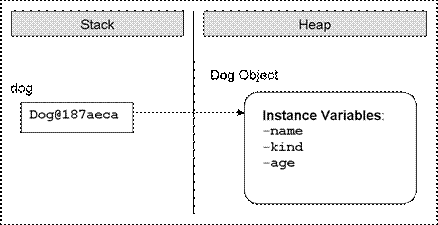
Ако се опитаме да отпечатаме стойността на една референция към обект в конзолата, ще получим нещо подобно на примера горе – <class_name>@hex_digit, което за нас е непонятно, но чрез него, Java държи връзка към реалния обект.
Когато декларираме една променлива от тип, някакъв клас, но не искаме тя да е инициализирана с връзка към конкретен обект, тогава трябва да й присвоим стойност null. Ключовата дума null в езика Java означава, че една променлива не сочи към нито един обект (липса на стойност):
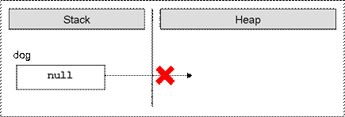
Както знаем, всеки клас в Java се съхранява във файл с разширение .java. Файлът трябва да отговаря на определени изисквания, които ще изложим в следващите подсекции.
Съгласно конвенцията на Sun за форматиране на кода, на първо място, във всеки един .java файл, трябва да декларираме пакета на класа. Това трябва да стане на първия ред във файла, който не е коментар. Както знаем от главата "Създаване и използване на обекти", не сме задължени да дефинираме класовете си в пакети, но е добра практика да го правим, тъй като разпределянето на .java файловете помага за по-добрата организираност на кода и разграничаването на класовете с еднакви имена.
След декларирането на пакета, следва включването на пакети, които са нужни за работата на нашите класове, т.нар. import-дефиниции. По подобие на пакетите и те не са задължителни, но ако ги имаме в кода си, трябва да ги поставим незабавно след декларацията на пакета. Ако във файла няма деклариран пакет, тогава включването на пакети трябва да е на първия ред от файла.
След включването на пакети, следват декларациите на класовете, които могат да се съдържат в дадения .java файл. В един .java файл може да бъде деклариран повече от един клас. Декларацията на класовете става последователно, като редът за декларирането им няма значение. Въпреки всичко, заради прегледност, е по-добре всеки клас да се съхранява в отделен .java файл.
Ако не декларираме нито пакет в .java файла, нито включване на външни пакети, декларацията на първия клас от файла трябва да е на първия ред. Разбира се, ако не декларираме нито един клас в .java файла, това няма да бъде сметнато за грешка от компилатора, но това така или иначе няма смисъл.
Ето схема, по която трябва да се ориентираме, когато декларираме клас:
|
InternalJavaFileOrder.java |
|
// Package definition – optional package <package_name>;
// Import definitions - optional import <package>; import <package>;
// Class declaration class <fist_class_name> { // ... Code ... }
// Class declaration class <second_class_name> { // ... Code ... }
// ...
// Class declaration class <n-th_class_name> { // ... Code ... } |
Декларирането на пакета и съответно включването на пакети са вече обяснени в главата "Създаване и използване на обекти". За това как се декларират класове, ще говорим след малко. Тук бяха представени формално, за да придобием представа за структурата на всеки .java файл.
Преди да продължим, да обърнем внимание на първия ред от схемата. Вместо декларация на пакет, има коментар. Това не е проблем, тъй като по време на компилация, коментарите се "изчистват" от кода и на първи ред от файла остава декларацията на пакета.
Когато създаваме .java файл, в който да дефинираме класа си, е добре да помислим за кодирането при съхраняването му на файловата система.
Вътрешно, Java представя кода в Unicode кодиране, затова, няма проблеми, ако във файла използваме символи, които са от азбуки, различни от латинската, например на кирилица:
|
EncodingTest.java |
|
public class EncodingTest {
// Тестов коментар static int години = 4;
public static void main(String[] args) { System.out.println("години: " + години); } } |
Този код ще се компилира и изпълни без проблем, но за да запазим символите четими в редактора, трябва да изберем подходящото кодиране на файла.
По подразбиране, Eclipse използва настройките на операционната система за кодиране на .java файловете. Но ако при тази ситуация, във файла въведем по-особен символ, например китайски йероглиф, той няма да има представяне в кодовата таблица на кирилицата и най-вероятно няма да бъде визуализиран коректно в Eclipse. За да нямаме подобни проблеми, е добре да настроим Eclipse, да съхранява .java файлове с кодиране UTF-8. Това става по следния начин: избираме от менюто Window -> Preferences -> General -> Workspace -> Text File Encoding -> Other -> UTF-8:
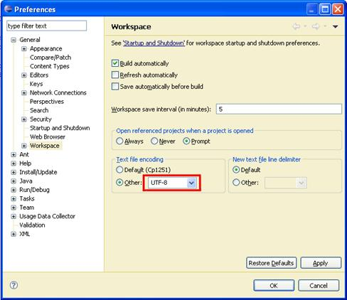
Въпреки, че имаме възможността да използваме символи от други азбуки, в .java файловете, e препоръчително да пишем всички идентификатори и коментари на английски език, за да може кодът ни да е разбираем за повече хора по света.
Представете си само ако ви се наложи да дописвате код, писан от виетнамец, където имената на променливите и коментарите са на виетнамски език. Не искате да ви се случва, нали? А как ще се почувства един виетнамец, ако види променливи и коментари на български език?
Нека си припомним, от главата "Методи", че модификатор наричаме ключова дума, с помощта, на която даваме допълнителна информация на компилатора за кода, за който се отнася модификатора.
В Java има три модификатора за достъп. Те са public, protected и private. В тази глава ще се занимаем подробно само с public и private. Повече за protected ще научим в главата "Принципи на обектно-ориентираното програмиране".
Модификатори за достъп могат да се използват само пред следните елементи на класа: декларация, полета/свойства и методи на класа.
Както казахме, в Java, има три модификатора за достъп – public, protected и private. С тях ние ограничаваме или позволяваме достъпа (видимостта) до елементите на класа, пред които те са поставени. На всеки един от тях, съответства ниво на достъп, което носи името на съответния модификатор, съответно – public, protected и private.
В Java обаче, има четвърто ниво на видимост до елемент на клас, за което няма модификатор за достъп. В литературата, това ниво на достъп се нарича default или package (след малко ще видим защо), а понякога в по-стари книги за Java се среща и като friendly. Съответно, класове, полета, свойства или методи на даден клас, които нямат модификатор за видимост в декларацията си, считаме, че имат ниво на достъп default.
|
|
В Java има три модификатора за видимост, но четири нива на достъп. Четвъртото, се нарича ниво на достъп default, и е в сила, когато пред съответния елемент на класа няма никакъв модификатор за достъп. |
Сега ще дадем общо обяснение за различните нива, а в последствие, когато разглеждаме всеки един от елементите на класа, ще дадем по-подробна информация за всяко едно от тях.
Използвайки модификатора public, ние указваме на компилатора, че елементът, пред който е поставен, може да бъде достъпен от всеки друг клас, независимо дали е в текущия пакет или извън него. Той определя най-малко ограничителното ниво на видимост от всички нива в Java.
Това ниво на достъп се прилага, когато не се използва никакъв модификатор за достъп пред съответния елемент.
То е по-ограничително от public-видимостта, тъй като позволява, да достъпваме съответният елемент, само от класове, които се намират в същия пакет, в който се намира класът, на който принадлежи елементът.
Това е нивото на достъп, което налага най-голяма рестрикция на видимостта на класа и елементите му. Модификаторът private служи за индикация, че елементът, за който се отнася, не може да бъде достъпван от никой друг клас, дори този клас да се намира в същия пакет.
Декларирането на клас има строго определени правила (синтаксис), които трябва да спазваме:
|
[<access_modifier>] class <class_name> |
Когато декларираме клас, задължително трябва да използваме ключовата дума class. След нея трябва да стои името на класа <class_name>.
|
|
Задължителните елементи от декларацията на класа са ключовата дума class и името на класа. |
Освен ключовата дума class и името на класа, в декларацията на класа могат да бъдат използвани някои модификатори. Тук, ще обърнем внимание само на позволените модификатори за достъп.
Нека имаме два класа – А и В. Казваме, че класът А, има достъп до класа В, ако може да прави едно от следните неща:
- Създава обект (инстанция) от тип класа В.
- Достъпва определени методи и член-променливи (полета) в класа В, в зависимост от нивото на достъп на съответните методи и полета.
(Има и трета операция, която може да бъде извършвана с класове, когато имат видимост, наречена наследяване на клас, но за нея ще говорим подробно в главата "Принципи на обектно-ориентираното програмиране").
Както разбрахме, достъп означава "видимост". Ако класът А не може да "види" класа В, нивото на достъп на методите и полетата в класа В нямат значение.
Нивата на достъп, които един клас може да има са само public и default.
Ако декларираме един клас с модификатор за достъп public, ще можем да го достъпваме от всички Java класове, от всички пакети, независимо къде се намират те. Това означава, че всеки друг клас ще може да създава обекти от тип този клас и да има достъп до методите и полетата (с подходящо ниво на достъп) на класа.
Не трябва да забравяме, че ако искаме да използваме клас с ниво на достъп public, от друг пакет, различен от текущия, в който създаваме класа си, трябва да използваме конструкцията за включване на пакети import, за пакета, в който се намира желаният за употреба клас.
Ако в един .java файл дефинираме повече от един клас, то в този файл е позволено да имаме само един единствен клас, който е с модификатор public. Освен това, когато декларираме един клас като public, файлът, в който се намира класът, трябва да има същото име, като на този клас.
|
|
Всеки клас с модификатор за достъп public трябва да е дефиниран в собствен файл с разширение .java, да е единствения public клас във файла и този файл трябва да е именуван с името на public класа. |
В случай, че класът няма модификатор за достъп (т.е. има ниво на достъп default), този клас ще e видим само за класовете, които се намират в пакета, в който е деклариран класа. Затова понякога това ниво на достъп се нарича package.
Например, ако имаме клас A и клас В, но в различни пакети, и съответно клас A е с ниво на достъп default, то в клас В няма да можем да създаден нито един обект от тип A, или дори да дефинираме променлива от тип A.
|
А.java |
|
package package1;
class A {} |
Всъщност за класа В, класът А изобщо не съществува и ако въпреки всичко, се опитаме да използваме класът А в класа В, например:
|
В.java |
|
package package2;
import package1.A;
public class B {
public static void main(String[] args) { A aInstance; } } |
Компилаторът ще се "оплаче" със съобщение подобно на следното:
|
The type package1.A is not visible |
За да сме изчерпателни, ще споменем, че като модификатор за достъп до клас, може да се използва модификатора за видимост private, но това е свързано с понятието "вътрешен клас" (inner class), което ще разгледаме в секцията "Вътрешни, локални и анонимни класове".
Преди да приключим с обяснението за декларация на клас ще кажем, че по подобие на методите, след декларацията на класа, следва неговото тяло, т.е. частта от класа, в която се съдържа програмния код:
|
[<access_modifier>] class <class_name> {
// ... Class body – the code of the class goes here ...
} |
Тялото на класа, започва с отваряща фигурна скоба "{" и завършва със затваряща – "}". Класът винаги трябва да има тяло.
По подобие на декларирането на име на метод, за създаването на име на клас, има правила, които са препоръчани от Sun:
- Името на класа винаги започва с главна буква.
- Ако името на класа е съставено от няколко думи, първата буква от всяка нова дума, долепена до предходната, трябва да бъде главна.
- За имена на класове обикновено се използват съществителни имена.
- Името на класа е добре да бъде на английски език.
Ето няколко пример за имена на класове, които са правилно декларирани и форматирани:
|
Dog Account Car BufferedReader |
Ключовата дума this, в Java, е референция към текущия обект – обектът, чийто метод или конструктор бива извикван. Можем я приемем като указател (референция), дадена ни априори от създателите на Java, с която да достъпваме елементите (полета, методи, конструктори) на собствения ни клас:
|
this.myField this.doMyMethod() this(3,4) // if there is constructor with two int parameters |
В момента няма да обясняваме изложения код. Разяснения ще дадем по-късно, в местата от секциите на тази глава, посветени на елементите на класа (полета, методи, конструктори) и засягащи ключовата дума this.
Както казахме в началото на главата, когато декларираме клас, ние описваме обект от реалния живот. За описанието на този обект, ние се фокусираме само върху характеристиките му, които имат отношение към проблема, който ще решава нашата програма.
Тези характеристики на реалния обект, ги интерпретираме в декларацията на класа, като декларираме набор от специален тип променливи, наречени полета, в които пазим данните за отделните характеристики. Когато създадем обекти по описанието на нашия клас, стойностите на полетата, ще съдържат конкретните характеристики, с които даден екземпляр (обект) се отличава от всички останали обекти от дадения клас.
До момента, сме се сблъсквали само с два типа променливи (вж. главата "Методи"), в зависимост от това къде са декларирани:
- Локални променливи – това са променливите, които са дефинирани в тялото на някой метод (или блок).
- Параметри – това са променливите в списъка с параметри, който един метод може да има в реда, на който е деклариран.
В Java съществува и трети вид променливи, наречени полета (fields) или член-променливи на класа (instance variables).
Те се декларират в тялото на класа, но извън тялото на блок, метод или конструктор (какво е конструктор, ще разгледаме подробно след малко).
|
|
Полетата се декларират в тялото на класа, но извън тялото на метод, конструктор или блок. |
Ето един примерен код, в който се декларират различни полета:
|
MyClass.java |
|
class MyClass { int age; long distance; String[] names; Dog myDog; } |
Формално, декларацията на полетата става по следния начин:
|
[<modifiers>] <field_type> <field_name>; |
<field_type> определя типа на даденото поле. Той може да бъде, както примитивен тип (byte, short, char и т.н.) или масив, така и от тип, някакъв клас (например String).
<field_name> е името на даденото поле. Както при имената на обикновените променливи, когато именуваме една член-променлива трябва да спазваме правилата за идентификатори в Java (вж. главата "Примитивни типове и променливи").
<modifiers> е понятие, с което сме означили, както модификаторите за достъп, така и други модификатори. Те не са задължителна част от декларацията на едно поле.
Модификаторите и нивата за достъп, позволени в декларацията на едно поле са обяснени в секцията "Видимост на полета и методи" малко по-долу.
В тази глава, от другите модификатори, които не са за достъп, и могат да се използват при декларирането на полета на класа, ще обърнем внимание само на static и final. Оставащите модификатори (transient и volatile) са извън обсега на тази книга и няма да бъдат разглеждани.
Трябва да знаем, че областта на действие (scope) на едно поле е от реда, на който е декларирано, до затварящата фигурна скоба на тялото на класа.
Когато декларираме едно поле е възможно едновременно с неговата декларация да му дадем първоначална стойност. Начинът, по който става това е същият, както при инициализацията (даването на стойност) на обикновена локална променлива:
|
[<modifiers>] <field_type> <field_name> = <initial_value>; |
Разбира се, трябва <initial_value> да бъде от типа на полето, или някой съвместим с него тип. Например:
|
MyClass.java |
|
class MyClass {
int age = 5; long distance = 234; // the literal 234 is of integer type
String[] names = new String[] { "Pencho", "Marincho" }; Dog myDog = new Dog();
// ... Other code ... } |
Всеки път, когато създаваме нов обект от даден клас, виртуалната машина на Java, автоматично заделя за всяко поле от класа, памет в хийпа (heap – част от оперативната памет на компютъра, където се съхраняват обектите и полетата им). След като бъде заделена, тази памет се инициализира автоматично с подразбиращи стойности за конкретния тип поле. Това става, независимо дали след това, полето се инициализира изрично от програмиста на реда на неговата декларация или не.
|
|
Полетата се инициализират с подразбиращите стойности за типа им всеки път, когато нов обект от дадения тип бива създаван, независимо дали по време на декларацията им, изрично им се присвоява стойност или не. |
Ето и списък с подразбиращите се стойности за всеки един тип:
|
Тип на поле |
Стойност по подразбиране |
|
byte |
0 |
|
short |
0 |
|
int |
0 |
|
long |
0L |
|
float |
0.0f |
|
double |
0.0d |
|
boolean |
false |
|
char |
"\u0000" |
|
референция към обект |
null |
Например, ако създадем клас Dog и за него дефинираме полета име (name), възраст (age), дължина (length) и дали кучето е от мъжки пол (isMale), без да ги инициализираме по време на декларацията им:
|
Dog.java |
|
public class Dog {
String name; int age; int length; boolean isMale;
public static void main(String[] args) { Dog dog = new Dog();
System.out.println("Dog's name is: " + dog.name); System.out.println("Dog's age is: " + dog.age); System.out.println("Dog's length is: " + dog.length); System.out.println("Dog's is male: " + dog.isMale); } } |
Съответно, като резултат ще получим:
|
Dog's name is: null Dog's age is: 0 Dog's length is: 0 Dog's is male: false |
В примера по-горе, чрез точкова нотация (поставяне на точка между името на променливата и полето на обекта – вж. главата "Създаване и използване на обекти"), достъпваме полетата на обекта dog, от тип Dog, и съответно извеждаме резултата за всяко едно от тях. Както виждаме, след създаването на обекта, полетата се инициализират със стойностите им по подразбиране, които изброихме в таблицата с подразбиращите се стойности.
Ако дефинираме дадена локална променлива в един метод, без да я инициализираме, и веднага след това се опитаме да я използваме (да кажем отпечатаме стойността й), това ще предизвика грешка при компилация, тъй като локалните променливи не се инициализират с подразбиращи се стойности по време на тяхното деклариране.
|
|
За разлика от полетата, локалните променливи, не биват инициализирани с подразбираща се стойност след тяхното деклариране. |
Например:
|
public static void main(String[] args) { int notInitializedLocalVariable; System.out.println(notInitializedLocalVariable); } |
Кодът няма да може да се компилира и съобщението за грешка ще бъде подобно на следното:
|
The local variable notInitializedLocalVariable may not have been initialized. |
Добър стил на програмиране е обаче, когато декларираме полетата на класа си, изрично да ги инициализираме с дадена подразбираща се стойност. Макар и да сме сигурни, че Java ще даде подразбираща се стойност на всяко едно от полетата, ако инициализираме всяко едно от тях, всеки, който погледне нашия код, ще знае каква е първоначалната стойност на полето. Това подобрява четимостта на кода.
Пример за такова инициализиране може да дадем като модифицираме примера от предходната секция "Инициализация по време на деклариране", класът MyClass:
|
MyClass.java |
|
class MyClass {
int age = 0; long distance = 0; String[] names = null; Dog myDog = null;
// ... Other code ... } |
Както споменахме в началото на тази секция, в декларацията на едно поле е позволено да се използва модификатор final. Той не е модификатор за достъп, се използва за еднократно инициализиране на полета. След като дадем стойност на едно поле, което има модификатор final в декларацията си, след това полето не може да приеме друга стойност.
Нека онагледим казаното с пример:
|
FinalModifierTest.java |
|
class FinalModifierTest { final int age = 5; // Here is the final field
public static void main(String[] args) { FinalModifierTest instance = new FinalModifierTest();
instance.age = 15; // Trying to reinitialize it... } } |
Ако се опитаме да компилираме този клас, няма да успеем, като ще получим следното съобщение за грешка:
|
The final field FinalModifierTest.age cannot be assigned. |
Решението е или да махнем final от декларацията на полето или да не се опитваме да го инициализираме отново.
В главата "Методи" подробно се запознахме с това как да декларираме и използваме метод. В тази секция, накратко ще припомним казаното там и ще се фокусираме върху някои нови особености при декларирането и създаването на методи.
Декларирането на методи, както знаем става по следния начин:
|
[<modifiers>] <return_type> <method_name>([<parameters_list>]) {
// ... Method"s body ...
[<return_statement>]; } |
Задължителните елементи при декларирането на метода са типът на връщаната стойност <return_type>, името на метода <method_name> и отварящата и затварящата кръгли скоби – "(" и ")".
Списъкът от параметри <params_list> не е задължителен. Използваме го да подаваме информация на метода, който декларираме, ако той се нуждае от такава.
Знаем, че ако типът на връщаната стойност <return_type> е void, тогава <return_statement> може да участва само с оператора return, с цел прекратяване действието на метода. Ако <return_type> е различен от void, методът задължително трябва да връща резултат чрез ключовата дума return, като резултатът е от тип <return_type> или съвместим с него.
Реалната работа, която методът трябва да свърши, се намира в тялото му, заградена от фигурни скоби – "{" и "}".
Макар, че разгледахме някои от модификаторите за достъп, позволени да се използват при декларирането на един метод, в секцията "Видимост на полета и методи" ще разгледаме по-подробно тази тема.
Ще разгледаме модификатора static в последната секция на тази глава.
Нека погледнем декларирането на един метод за намиране сбор на две цели числа:
|
int add(int number1, int number2) { int result = number1 + number2; return result; } |
Името, с което сме го декларирали, е add(), а типът на връщаната му стойност е int. Списъкът му от параметри се състои от два елемента – променливите number1 и number2. Съответно, връщаме стойността на сбора от двете числа като резултат.
В главата "Създаване и използване на обекти", видяхме как чрез оператора точка, можем да достъпим полетата и да извикаме методите на един клас. В тази секция ще разгледаме как можем по подобен начин да достъпваме полета и да извикваме методи на даден клас, които не са статични, т.е. нямат модификатор static, в декларацията си.
Например, нека имаме клас Dog, с поле за възраст – age. За да отпечатаме стойността на това поле, е нужно да създадем обект от клас Dog и да достъпим полето на този обект, чрез точкова нотация:
|
Dog.java |
|
public class Dog {
int age = 2;
public static void main(String[] args) { Dog dog = new Dog(); System.out.println("Dog's age is: " + dog.age); } } |
Съответно резултатът ще бъде:
|
Dog's age is: 2 |
В следващите подсекции ще разберем как това става в рамките на самия клас.
По-късно, в тази глава ще научим, че достъпа до стойността на едно поле, да се осъществява, не директно – чрез оператора точка (както бе в последния пример dog.age), а чрез метод. Нека използваме това знание предварително и в класа Dog, си създадем нестатичен метод, който при извикване, връща стойността на полето age:
|
int getAge() { return this.age; } |
Както виждаме, за да достъпим стойността на полето за възрастта, вътре, от самия клас, използваме ключовата дума this. Знаем, че ключовата дума this е референция към текущия обект, към който се извиква метода. Следователно, в нашия пример, с "return this.age", ние казваме "от текущия обект (this), вземи (използването на оператора точка), стойността на полето age и го върни като резултат от метода (чрез ключовата дума return) ". Тогава, вместо в метода main() да достъпваме стойността на полето age на обекта dog, ние просто ще извикаме метода getAge():
|
public static void main(String[] args) { Dog dog = new Dog(); System.out.println("Dog's age is: " + dog.getAge()); } |
Резултатът след тази промяна, ще бъде отново същият.
Формално, декларацията за достъп до поле в рамките на класа, е следната:
|
this.<field_name> |
Нека подчертаем, че този достъп е възможен, само от нестатичен код, т.е. метод или блок, който няма модификатор static.
Освен за извличане на стойността на едно поле, можем да използваме ключовата дума this, също така за модифициране.
Например, нека декларираме метод getOlder(), който извикваме всяка година на датата, на рождения ден на нашия домашен любимец и който, увеличава възрастта му с една година:
|
void getOlder() { this.age++; } |
За да проверим дали това, което написахме работи коректно, в края на метода main() добавяме следните два реда:
|
// One year later, on the birthday date... dog.getOlder(); System.out.println("After one year dog's age is: " + dog.age); |
След изпълнението, резултатът е следният:
|
Dog's age is: 2 After one year dog's age is: 3 |
По подобие на полетата, които нямат static в декларацията си, методите, които също не са статични, могат да бъдат извиквани в тялото на класа, чрез ключовата дума this. Това става, след като към нея, чрез точкова нотация извикаме метода, който ни е необходим:
|
this.<method_name>(...) |
Например, нека създадем метод printAge(), който отпечатва възрастта на обекта от тип Dog, като за целта извиква метода getAge():
|
void printAge() { int myAge = this.getAge(); // Calling getAge() by this System.out.println("My age is: " + myAge); } |
На първия ред от примера, указваме, че искаме да получим възрастта (стойността на полето age) на текущия обект, извиквайки метода getAge(), на текущия обект. Това става, чрез ключовата дума this.
|
|
Достъпването на нестатичните елементи на класа (полета и методи), се осъществява чрез ключовата дума this и оператора за достъп – точка. |
Когато достъпваме полетата на класа или извикваме нестатичните му методи, е възможно, да го направим без ключовата дума this. Тогава двата метода, които декларирахме могат да бъдат записани по следния начин:
|
int getAge() { return this.age; }
void getOlder() { this.age++; } |
Ключовата дума this се използва, изрично да укаже, че правим достъп до нестатично поле на даден клас или извикваме негов нестатичен метод. Когато това не е необходимо може да бъде пропускана и директно да се достъпва елементът на класа.
|
|
Когато не е нужно изрично да се укаже, че правим достъп до елемент на класа, ключовата дума this, може да бъде пропусната. |
От секцията "Деклариране на полета в даден клас" по-горе, знаем, че областта на действие на едно поле е от реда, на който е декларирано полето, до затварящата скоба на тялото на класа. Например:
|
OverlappingScopeTest.java |
|
class OverlappingScopeTest { int myValue = 3;
void printMyValue() { System.out.println("My value is: " + myValue); }
public static void main(String[] args) { OverlappingScopeTest instance = new OverlappingScopeTest();
instance.printMyValue(); } } |
Този код ще изведе в конзолата като резултат:
|
My value is: 3 |
От друга страна, когато имплементираме тялото на един метод, ни се налага да дефинираме локални променливи, които да използваме по време на изпълнение на метода. Както знаем, областта на действие на тези локални променливи започва от реда, на който са декларирани и продължава до затварящата фигурна скоба на тялото на метода. Например, нека добавим този метод в току що декларирания клас OverlappingScopeTest:
|
int calculateNewValue(int newValue) { int result = myValue + newValue; return result; } |
Тук, локалната променлива, която използваме, за да изчислим новата стойност, е result.
Понякога обаче, може да се случи така, че името на някоя локална променлива да съвпадне с името на някое поле. Тогава настъпва колизия.
Нека първо погледнем един пример, преди да обясним за какво става въпрос. Нека модифицираме метода printMyValue() по следния начин:
|
void printMyValue() { // Defining new local variable with the same name int myValue = 5;
System.out.println("My value is: " + myValue); } |
Ако декларираме така метода, дали той ще се компилира? А ако се компилира, дали ще се изпълни? Ако се изпълни коя стойност ще бъде отпечатана – тази на полето или тази на локалната променлива?
Така деклариран, след като бъде изпълнен метода main(), резултатът, който ще бъде отпечатан, ще бъде:
|
My value is: 5 |
Това е така, тъй като Java позволява да се дефинират локални променливи, чиито имена съвпадат с някое поле. Ако това се случи, казваме, че областта на действие на локалната променлива препокрива областта на действие на полето (scope overlapping).
Точно затова, областта на действие на локалната променлива myValue със стойност 5, препокри областта на действие на полето със същото име. Тогава, при отпечатването на стойността, бе използвана стойността на локалната променлива.
Въпреки това, понякога се налага да бъде използвано полето, въпреки че употребата му е в областта на действие на някоя променлива със същото име. В този случай, за да извлечем стойността на полето, използваме ключовата дума this. За целта, достъпваме полето чрез оператора точка, приложен към this. По този начин еднозначно указваме на виртуалната машина, че искаме да използваме стойността на полето, не на локалната променлива, която има същото име.
Нека разгледаме отново нашия пример с извеждането на стойността на полето myValue:
|
void printMyValue() { int myValue = 5;
// Accessing the field value by the keyword this System.out.println("My value is: " + this.myValue); } |
Този път, резултатът от извикването на метода е:
|
My value is: 3 |
В началото на главата разгледахме общите положения с модификаторите и нивата на достъп на елементите на един клас в Java. По-късно се запознахме подробно с нивата на достъп при декларирането на един клас.
Сега ще разгледаме нивата на видимост на полетата и методите в класа. Тъй като полетата и методите са елементи на класа и имат едни и същи правила при определяне на нивото им на достъп, ще изложим тези правила едновременно.
За разлика от декларацията на клас, при декларирането на полета и методи на класа, могат да бъдат използвани и четирите нива на достъп – public, protected, default и private. Нивото на видимост protected няма да бъде разглеждано в тази глава, тъй като е обвързано с тематиката на главата "Принципи на обектно-ориентираното програмиране" и ще бъде обяснено подробно в нея.
Преди да продължим, нека припомним, че ако един клас A, не е видим (няма достъп) от друг клас B, тогава нито един елемент (поле или метод) на класа A, не може да бъде достъпен от класа B.
|
|
Ако два класа не са видими един за друг, то елементите им (полета и методи) не са видими също, независимо с какви нива на достъп са декларирани самите те. |
В следващите подсекции, към обясненията, ще разглеждаме примери, в които имаме два класа (Dog и Kid), които са видими един за друг, т.е. всеки един от класовете може да създава обекти от тип – другия клас и да достъпва елементите му, в зависимост от нивото на достъп, с което са декларирани. Ето какъв е кодът на класовете:
|
Dog.java |
|
public class Dog { public String name = "Sharo";
public String getName() { return this.name; }
public void bark() { System.out.println("wow-wow"); }
public void doSth() { this.bark(); } } |
и съответно:
|
Kid.java |
|
public class Kid {
public void callTheDog(Dog dog) { System.out.println("Come, " + dog.name); }
public void wagTheDog(Dog dog) { dog.bark(); } } |
В момента, всички елементи (полета и методи) на двата класа са декларирани с модификатор за достъп public, но при обяснението на различните нива на достъп, ще го променяме в зависимост от съответното ниво. Това, което ще ни интересува е как промяната в нивото на достъп на елементите (полета и методи) на класа Dog и ще рефлектира върху достъпа до тези елементи, когато този достъп се извършва от:
- Самото тяло на класа Dog.
- Тялото на класа Kid, съответно вземайки в предвид дали Kid е в пакета, в който се намира класа Dog или не.
Когато метод или променлива на класа са декларирани с модификатор за достъп public, те могат да бъдат достъпвани от други класове, независимо дали другите класове са декларирани в същия пакет или извън него.
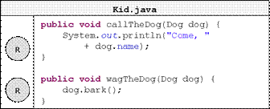
Тук сме означили достъпа до елементите на класа Dog, съответно с:
|
|
Достъп до елемент на класа осъществен в самата декларация на класа |
|
|
Достъп до елемент на класа осъществен, чрез референция към обект, създаден в тялото на друг клас |
Както виждаме, без проблем осъществяваме, достъп до полето name и метода bark(), в класа Dog, от тялото на самия клас. Също така, независимо дали класът Kid е в пакета на класа Dog, можем от тялото му, да достъпим полето name и съответно да извикаме метода bark() чрез оператора точка, приложен към референцията dog към обект от тип Dog.
Когато елемент на някой клас бъде деклариран с ниво на достъп default, т.е. без модификатор за достъп, тогава този елемент на класа може да бъде достъпван от всеки клас в същия пакет, но не и за класовете извън пакета:
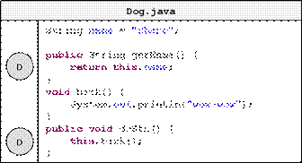
Съответно, за класа Kid, разглеждаме двата случая:
- Когато е в същия пакет, достъпът до елементите на класа Dog, ще бъде позволен:
- Когато класът Kid е външен за пакета, в който е деклариран класа Dog, тогава достъпът до полето name и метода bark() ще е невъзможен:
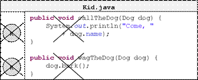
Въпреки всичко, ако се опитаме да компилираме класа Kid, във втория случай, когато е външен за пакета, в който се намира класа Dog, няма да успеем и грешките, които ще бъдат изведени, ще бъдат следните:
|
The field Dog.name is not visible. The method bark() from the type Dog is not visible. |
Нивото на достъп, което налага най-много ограничения е private. Елементите на класа, които са декларирани с модификатор за достъп private, не могат да бъдат достъпвани от никой друг клас, различен от класа, в който са декларирани.
Това ще рече, че ако декларираме полето name и метода bark() на класа Dog, с модификатори private:
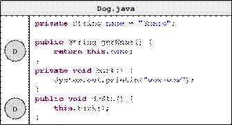
Тогава, достъпът до тях, от тялото на класа Kid, няма да бъде достъпен, независимо, дали класът Kid е деклариран в пакета, в който е деклариран класа Dog или е вън от него:
- Когато Kid е в същия пакет, достъпът до полето name и метода bark() на класа Dog, няма да бъде позволен:
- Когато класът Kid е външен за пакета, в който е деклариран класът Dog, тогава достъпът до полето name и метода bark() отново ще е невъзможен:
Трябва да знаем, че когато полето ни има модификатор за достъп, най-често той е добре да бъде модификатор за достъп private, тъй като той дава възможно най-висока защита за достъп до стойността на полето. Съответно, достъпът и модификацията на тази стойност се осъществяват единствено чрез методи. Повече за тази техника ще научим в секцията "Капсулация (Encapsulation)" на главата "Принципи на обектно-ориентираното програмиране".
Преди да приключим със секцията за видимостта на елементите на един клас, нека направим един експеримент. Нека в класа Dog полето name и метода bark() са декларирани с модификатор за достъп private. Нека също така, декларираме метод main(), със следното съдържание:
|
Dog.java |
|
public class Dog { private String name = "Sharo";
// ...
private void bark() { System.out.println("wow-wow"); }
// ...
public static void main(String[] args) { Dog myDog = new Dog(); System.out.println("My dog's name is " + myDog.name); myDog.bark(); } } |
Въпросът, който стои пред нас е, ще се компилира ли класът Dog, при положение, че сме декларирали елементите на класа с модификатор за достъп private, а в същото време ги извикваме с точкова нотация, приложена към променливата myDog, в метода main()?
Стартираме компилацията и тя минава успешно. Това е така, тъй като модификаторите за достъп до елементите на класа се прилагат на ниво клас, а не на ниво обекти, т.е. тъй като променливата myDog е дефинирана в тялото на класа Dog, можем да достъпваме елементите й (полета и методи) чрез точкова нотация, независимо че са декларирани с ниво на достъп private. Ако обаче се опитаме да направим същото от тялото на класа Kid, това няма да е възможно, тъй като достъпът до private полетата на класа няма да е разрешен.
|
|
Нивото на достъп на елемент от класа, се определя на ниво клас, а не на ниво обект от даден клас. |
Съответно, резултатът от изпълнението на метода main(), който декларирахме в класа Dog ще бъде следния:
|
My dog's name is Sharo wow-wow |
В обектно-ориентираното програмиране, когато създаваме обект от даден клас, е необходимо да извикаме елемент от класа, наречен конструктор.
Конструктор на даден клас, наричаме псевдометод, който няма тип на връщана стойност, носи името на класа и който се извиква чрез ключовата дума new.
Задачата на конструктора е да задели памет в хийпа, където ще съхраняват данните, които се пазят в полетата на конкретния обект (тези, които не са static), инициализира всяко поле с подразбиращата се за типа му стойност и връща референция към новосъздадения обект.
За разлика от методите, в Java, единствения начин да извикаме един конструктор е чрез използването на ключовата дума new.
Нека разгледаме един пример, от който ще стане ясно как работи конструктора. От главата "Създаване и използване на обекти", знаем как се създава обект:
|
Dog myDog = new Dog(); |
В случая, чрез ключовата дума new, стартираме конструктора на класа Dog. След това, той заделя паметта необходима за новосъздадения обект от тип Dog:
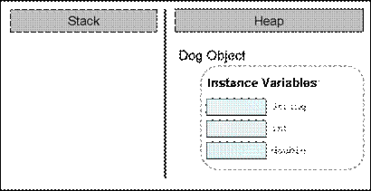
Инициализира полетата му, ако има такива, с подразбиращите се стойности, за съответните им типове:
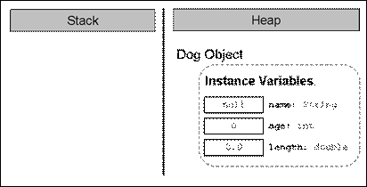
Ако създаването на новия обект е завършило успешно, конструкторът връща референция към него, която ние присвояваме на променливата myDog, от тип – класа Dog:
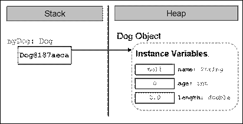
Ако имаме класа Dog, ето как би изглеждал неговия най-опростен конструктор:
|
public Dog() { } |
Формално, декларацията на конструктора изглежда по следния начин:
|
[<modifiers>] <class_name>([<parameters_list>]) |
Както вече казахме, конструкторите приличат на методи, но нямат тип на връщана стойност (затова ги нарекохме псевдометоди).
В Java, задължително, името на всеки конструктор съвпада с името на класа, в който го декларираме - <class_name>. В примера по-горе, името на конструктора е същото, каквото е името на класа – Dog. Трябва да знаем, че както при методите, името на конструктора винаги е следвано от кръгли скоби – "(" и ")".
Трябва да отбележим, че в Java е напълно легално, да се декларира метод, който притежава име, което съвпада с името на класа. Разбира се това не го прави конструктор, тъй като конструкторите нямат тип на връщаната стойност. Ето един такъв пример:
|
MyClass.java |
|
public class MyClass {
// LEGAL constructor public MyClass() { }
// Misleading method - has return type String MyClass() { return "MyClass() method has finished successfully."; }
public static void main(String[] args) { MyClass instance = new MyClass();
// Calling the tricky method... System.out.println(instance.MyClass()); } } |
По подобие на методите, ако за създаването на обекта, са необходими допълнителни данни, конструкторът ги получава чрез списък от параметри – <parameters_list>. В примерния конструктор на класа Dog, няма нужда от допълнителни данни за създаване на обект от такъв тип и затова няма деклариран списък от параметри. Повече за списъка от параметри ще разгледаме в една от следващите секции – "Деклариране на конструктор с параметри".
Разбира се след декларацията на конструктора, следва неговото тяло, което е като тялото на всеки един метод в Java.
Забелязваме, че в декларацията на конструктора, може да се добавят модификатори – <modifiers>. За модификаторите, които познаваме и които не са модификатори за достъп, т.е. final и static, трябва да кажем, че не са позволени за употреба при декларирането на конструктори.
По подобие на полетата и методите на класа, конструкторите, могат да бъдат декларирани с нива на достъп public, protected, default и private. Нивото на достъп protected, ще бъде обяснено в главата "Принципи на обектно-ориентираното програмиране". За останалите нива на достъп, трябва да кажем, че видимостта на конструкторите е същата като тази на полетата и методите.
Когато конструкторът е с модификатор за достъп public, той може да бъде извикан от кой да е друг клас (стига видимостта на неговия собствен клас да го позволява). В контекста на примерите с класовете Dog и Kid, които използвахме в предните секции, ако нивото на достъп на целия клас Dog е public, и съответно конструкторът му също е с видимост public, обекти от тип Dog, могат да бъдат създавани в класа Kid, независимо Kid в кой пакет е деклариран:
|
Dog.java |
|
public class Dog { public String name = "Sharo";
public Dog() { }
// ... Rest of the class body ... } |
и съответно:
|
Kid.java |
|
public class Kid { public static void main(String[] args) {
// ... Constructor invocation ... Dog myDog = new Dog();
System.out.println("My dog is called " + myDog.getName()); } } |
Ако конструкторът е деклариран без модификатор за достъп, т.е. има ниво на достъп default, обекти от нашия клас могат да бъдат създавани само в рамките на класа ни, или в класовете, които се намират в пакета, в който се намира нашия клас.
С други думи, ако класът Kid, е в пакет package2, а класът Dog, се намира в пакет package1 и съответно конструкторът на класа Dog е без модификатор за достъп:
|
Dog.java |
|
package package1;
public class Dog { // ...
Dog() { } // Constructor with Default Access Control
// ... } |
Създаването на обекта, рефериран от променливата myDog в метода main() на класа Kid, ще е невъзможно:
|
Kid.java |
|
public class Kid { public static void main(String[] args) {
// ... Constructor invocation ... Dog myDog = new Dog(); // IMPOSSIBLE!
// ... } } |
Съобщението за грешка, което компилаторът ще изведе, ще бъде следното:
|
The constructor Dog() is not visible. |
Както можем да се досетим, когато модификаторът за достъп в декларацията на един конструктор е private, то можем да създаваме обекти от тип този клас, само в рамките на класа. Всички останали класове, независимо в кой пакет се намират, не могат да извикват конструктор с ниво на видимост private.
Ако в декларацията на конструктора на класа Dog е включен модификатора private:
|
private Dog() {} |
Независимо в кой пакет е класа Kid, при опит да създадем обект от тип Dog, съобщението за грешка ще бъде същото, което бе указано в секцията за ниво на достъп default:
|
The constructor Dog() is not visible. |
Както научихме по-рано, при извикването на конструктора, се заделя памет за полетата на обекта от дадения клас, които не са декларирани с модификатор за достъп static, като паметта за тези полета се инициализира със стойностите по подразбиране за съответния тип (вж. секция "Извикване на конструктор").
Освен това, чрез конструкторите най-често инициализираме полетата на класа, със стойности зададени от нас, а не с подразбиращите се за типа.
Например, в примерите, които разглеждахме до момента, винаги полето name на обекта от тип Dog, го инициализирахме по време на неговата декларация:
|
String name = "Sharo"; |
Вместо да правим това по време на декларацията на полето, по-добър стил на програмиране е да му дадем стойност в конструктора:
|
Dog.java |
|
public class Dog { String name;
public Dog() { this.name = "Sharo"; }
// ... The rest of the class body ... } |
В някои книги се препоръчва, въпреки че инициализираме полетата в конструктора, изрично да присвояваме подразбиращите се за типа им стойности по време на инициализация, с цел да се подобри четимостта на кода, но това е въпрос на личен избор:
|
Dog.java |
|
public class Dog { private String name = null;
public Dog() { this.name = "Sharo"; }
// ... The rest of the class body ... } |
Нека разгледаме подробно, какво прави конструкторът след като бъде извикан и в тялото му инициализираме полетата на класа. Знаем, че при извикване, той ще задели памет за всяко поле и тази памет бъде инициализирана със стойността по подразбиране.
Ако полетата са от примитивен тип, тогава след подразбиращите се стойности, ще бъдат присвоени новите, които ние подаваме.
В случая, когато полетата са от референтен тип, например нашето полето name, конструкторът ще ги инициализира с null. След това ще създаде обекта от съответния тип, в случая низа "Sharo" и накрая ще се присвои референция към новия обект в съответното поле, при нас – полето name.
Същото ще се получи, ако имаме и други полета, които не са примитивни типове и ги инициализираме в конструктора. Например, нека имаме клас, който описва каишка – Collar:
|
Collar.java |
|
public class Collar {
private int size;
public Collar() {} } |
Нека съответно нашият клас Dog, има поле collar, което е от тип Collar и което инициализираме в конструктора на класа:
|
Dog.java |
|
public class Dog {
private String name; private int age; private double length; private Collar collar;
public Dog() { this.name = "Sharo"; this.age = 3; this.length = 0.5; this.collar = new Collar(); }
public static void main(String[] args) { Dog myDog = new Dog(); } } |
Нека проследим стъпките, през които минава конструктора, след като бъде извикан в main() метода. Както знаем, той ще задели памет в хийпа за всички полета, и ще ги инициализира със съответните им подразбиращи се стойности:
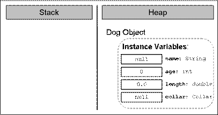
След това, конструкторът ще трябва да се погрижи за създаването на обекта за полето name (т.е. ще извика конструктора на класа String, който ще свърши работата по създаването на низа):
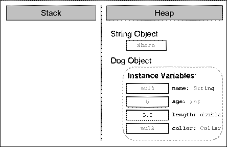
След това нашия конструктор ще запази референция към новия низ в полето name:
След това идва ред на създаването на обекта от тип Collar. Нашият конструктор (на класа Dog), извиква конструктора на класа Collar, който заделя памет за новия обект:
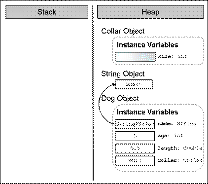
След това я инициализира с подразбиращата се стойност за съответния тип:
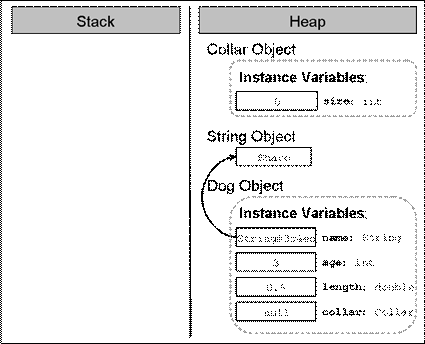
След това референцията към новосъздадения обект, която конструкторът на класа Collar връща като резултат от изпълнението си, се записва в полето collar:
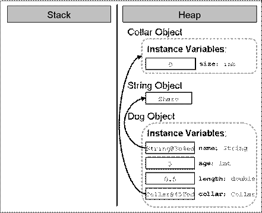
Накрая референцията към новия обект от тип Dog се присвоява на локалната променлива myDog в метода main():
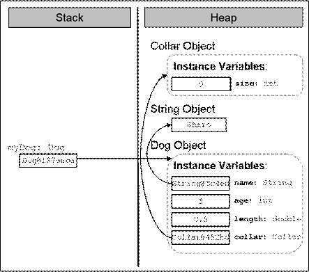
Помним, че локалните променливи винаги се съхраняват в областта от оперативната памет, наречена стек, а обектите – в частта, наречена хийп.
За да няма обърквания, нека отбележим последователността, в която се инициализират полетата на един клас, независимо от това дали сме им дали стойност по време на декларация и/или сме ги инициализирали в конструктора.
Първо се заделя памет за съответното поле в хийпа и тази памет се инициализира със стойността по подразбиране на типа на полето. Например, нека разгледаме отново нашия клас Dog:
|
Dog.java |
|
public class Dog { String name;
public Dog() { System.out.printf("this.name has value of: %s\n", this.name); // ... No other code here ... } // ... Rest of the class body ... } |
При опит да създадем нов обект от тип нашия клас, в конзолата ще бъде отпечатано съответно:
|
this.name has value of: null |
Втората стъпка на виртуалната машина, след инициализирането на полетата със стойността по подразбиране за съответния тип е, ако е зададена стойност при декларацията на полето, тя да му се присвои.
С други думи, ако променим реда от класа Dog, на който декларираме полето name, го променим по следния начин:
|
String name = "Walcho"; |
Полето първоначално ще бъде инициализирано със стойност null и след това ще му бъде присвоена стойността Walcho.
Съответно, при всяко създаване на обект от нашия клас:
|
public static void main(String[] args) { Dog dog = new Dog(); } |
Ще бъде извеждано:
|
this.name has value of: Walcho |
Едва след тези две стъпки на инициализация на полетата на класа (инициализиране със стойностите по подразбиране и евентуално стойността зададена от програмиста по време на декларация на полето), се извиква конструкторът на класа. Едва тогава, полетата получават стойностите, с които са им дадени в тялото на конструктора.
Ако се опитаме да декларираме поле с модификатор final и не го инициализираме на нито едно място в класа, то това поле няма да бъде инициализирано със стойността по подразбиране. Затова, даването на стойност на това поле, трябва да стане на реда на неговото деклариране. В противен случай, компилаторът ще изведе грешка.
Например, ако се опитаме да компилираме класа FinalModifierTest, като не инициализираме полето по време на неговото деклариране:
|
FinalModifierTest.java |
|
class FinalModifierTest { final int age; // There is no initializing value
public static void main(String[] args) { FinalModifierTest instance = new FinalModifierTest(); } } |
Ще получим следното съобщение за грешка:
|
The blank final field age may not have been initialized |
За да избегнем това, трябва или да дадем стойност на полето age на реда на неговата декларация, или да декларираме конструктор и да го инициализираме в него. Например:
|
FinalModifierTest() { age = 3; } |
Сега класът ни се компилира без проблеми.
В предната секция, видяхме как можем да дадем стойности на полетата, различни от стойностите по подразбиране. Много често обаче, по време на декларирането на конструктора, не знаем какви стойности ще приемат различните полета. За да се справим с този проблем, по подобие на методите с параметри, нужната информация, която трябва за работата на конструктора, му се подава чрез списъка с параметри. Например:
|
public Dog(String dogName, int dogAge, double dogLength) { name = dogName; age = dogAge; length = dogLength; collar = new Collar(); } |
Съответно извикването на конструктор с параметри, става по същия начин както извикването на метод с параметри – нужните стойности ги подаваме в списък, чийто елементи са разделени със запетайки:
|
public static void main(String[] args) {
Dog myDog = new Dog("Bobi", 2, 0.4); // Passing parameters
System.out.println("My dog " + myDog.getName() + " is " + myDog.age + " year(s) old. " + " and it has length: " + myDog.length + " m"); } |
Резултатът от изпълнението на този main() метод е следния:
|
My dog Bobi is 2 year(s) old. It has length: 0.4 m |
Трябва да знаем, че нямаме ограничение за броя на конструкторите, които можем да създадем. Единственото условие е те да се различават по сигнатурата си (какво е сигнатура обяснихме в главата "Методи").
По аналогия на областта на действие на променливите в списъка с параметри на един метод, променливите в списъка с параметри на един конструктор имат област на действие от отварящата скоба на конструктора до затварящата такава, т.е. в цялото тяло на конструктора.
Много често, когато декларираме конструктор с параметри, е възможно да именуваме променливите от списъка му с параметри, със същите имена, като имената на полетата, които ще бъдат инициализирани. Нека за пример вземем отново конструктора, който декларирахме в предходната секция:
|
public Dog(String name, int age, double length) { name = name; age = age; length = length; collar = new Collar(); } |
Нека компилираме и изпълним съответно main() метода, който също използвахме в предходната секция. Ето какъв е резултатът от изпълнението му:
|
My dog null is 0 year(s) old. It has length: 0.0 m |
Странен резултат, нали? Всъщност се оказва, че не е толкова странен. Обяснението е следното – областта, в която действат променливите от списъка с параметри на конструктора, припокрива областта на действие на полетата, които имат същите имена, в конструктора. По този начин не даваме никаква стойност на полетата, тъй като на практика ние не ги достъпваме. Например, вместо на полето age, ние присвояваме стойността на променливата age на самата нея:
|
age = age; |
Както видяхме в секцията "Припокриване на област на действие на полета и локални променливи", за да избегнем това разминаване, трябва да достъпим полето, на което искаме да присвоим стойност, но чието име съвпада с името на променлива от списъка с параметри, използвайки ключовата дума this:
|
public Dog(String name, int age, double length) { this.name = name; this.age = age; this.length = length; this.collar = new Collar(); } |
Сега, ако изпълним отново main() метода:
|
public static void main(String[] args) {
Dog myDog = new Dog("Bobi", 2, 0.4);
System.out.println("My dog " + myDog.getName() + " is " + myDog.age + " year(s) old. " + " and it has length: " + myDog.length + " m"); } |
Резултатът ще бъде точно какъвто очакваме да бъде:
|
My dog Bobi is 2 year(s) old. It has length: 0.4 m |
Подобно на методите с променлив брой аргументи, които разгледахме в главата "Методи", конструкторите също могат да бъдат декларирани с параметър за променлив брой аргументи. Правилата за декларация и извикване на конструктори с променлив брой аргументи са същите, каквито описахме за декларацията и извикването при методи:
- Когато декларираме конструктор с променлив брой аргументи, трябва да декларираме типа на аргументите, които ще бъдат подавани на метода, следван от три точки, след което името на масива, в който ще се съхраняват тези аргументи. Например за целочислени аргументи – int... numbers.
- Позволено е, конструкторът с променлив брой параметри да има и други параметри в списъка си от параметри.
- Параметърът за променлив брой аргументи трябва да е последен в списъка от параметри на конструктора.
Нека разгледаме примерна декларация на конструктор на клас, който описва лекция:
|
public Lecture(String subject, String... studentsNames) { // ... Initialization of the instance variables ... } |
Първият параметър в декларацията е името на предмета, по който е лекцията, а следващия параметър е за променлив брой аргументи – имената на студентите. Ето как би изглеждало примерното създаването на обект от този клас:
|
Lecture lecture = new Lecture("Biology", "Pencho", "Mincho", "Stancho"); |
Съответно, като първи параметър сме подали името на предмета – "Biology", а всички оставащи аргументи – имената на присъстващите студенти.
Както видяхме, можем да декларираме конструктори с параметри. Това ни дава възможност да декларираме конструктори с различна сигнатура (брой и подредба на параметрите), с цел да предоставим удобство на тези, които ще създават обекти от нашия клас. Създаването на конструктори с различна сигнатура се нарича създаване на варианти на конструкторите (constructors" overloading).
Нека вземем за пример класа Dog. Можем да декларираме различни конструктори:
|
public Dog() { // NO parameters this.name = "Sharo "; this.age = 1; this.length = 0.3; this.collar = new Collar(); }
public Dog(String name) { // One parameter this.name = name; this.age = 1; this.length = 0.3; this.collar = new Collar(); }
public Dog(String name, int age) { // Two parameters
this.name = name; this.age = age; this.length = 0.3; this.collar = new Collar(); }
public Dog(String name, int age, // Three parameters double length) { this.name = name; this.age = age; this.length = length; this.collar = new Collar(); }
public Dog(String name, int age, // Four parameters double length, Collar collar) { this.name = name; this.age = age; this.length = length; this.collar = collar; } |
В последния пример, който дадохме, видяхме, че в зависимост от нуждите за създаване на обекти от нашия клас, може да декларираме различни варианти на конструктори. Но също така забелязваме, че голяма част от кода на тези конструктори се повтаря. Това ни кара да се замислим, дали няма начин един конструктор, който вече извършва дадена инициализация, не може да бъде преизползван от другите, които правят същата инициализация. От друга страна, в началото на главата казахме, че един конструктор не може да бъде извикан както се извикват методите, а само чрез ключовата дума new.
В Java, съществува механизъм, чрез който един конструктор да извиква конструктор деклариран в същия клас:
|
this([<parameters_list>]) |
Извикването става с помощта на ключовата дума this, следвана от кръгли скоби. Ако конструкторът, който искаме да извикаме е с параметри, в скобите трябва да добавим списък от параметри, които да му подадем.
Ето как би изглеждал кодът от предната секция, в който вместо да повтаряме инициализацията на всяко едно от полетата, извикваме конструктори, декларирани в същия клас:
|
public Dog() { this("Sharo"); // Constructor call }
public Dog(String name) { this(name, 1); // Constructor call }
public Dog(String name, int age) { this(name, age, 0.3); // Constructor call }
public Dog(String name, int age, double length) { this(name, age, length, new Collar()); // Constructor call }
public Dog(String name, int age, double length, Collar collar) { this.name = name; this.age = age; this.length = length; this.collar = collar; } |
Преди свободно да декларираме конструктори, които извикват други конструктори в класа, трябва да знаем, че ако в един конструктор викаме друг конструктор, то това трябва да стане на първия ред. Например, ако вземем конструктора с три параметъра по-горе и решим да направим следното:
|
public Dog(String name, int age, double length) { Collar collar = new Collar(); this(name, age, length, collar); // NOT on the first line } |
Компилатора ще изведе следното съобщение за грешка:
|
Constructor call must be the first statement in a constructor. |
Нека отбележим още веднъж:
|
|
Ако в един клас, един конструктор вика друг конструктор от същия клас, то извикваният конструктор трябва да е на първия ред в извикващия конструктор. В противен случай, класът няма да се компилира. |
Нека разгледаме следния въпрос – какво става, ако не декларираме конструктор в нашия клас? Как ще създадем обекти от този тип?
Когато не декларираме нито един конструктор, компилаторът ще създаде един за нас и той ще се използва при създаването на обекти от типа на нашия клас. Този конструктор се нарича конструктор по подразбиране (implicit constructor).
|
|
Когато не дефинираме нито един конструктор в даден клас, компилаторът ще създаде един, наречен конструктор по подразбиране. |
Например, декларираме класа Collar, без да декларираме никакъв конструктор в него:
|
Collar.java |
|
public class Collar {
private int size;
public int getSize() { return this.size; } } |
Въпреки това ще можем да създадем обекти от тип, този клас, по следния начин:
|
Collar collar = new Collar(); |
Конструкторът по подразбиране изглежда по следния начин:
|
<class_access_level> <class_name>() |
Трябва да знаем, че конструкторът по подразбиране винаги носи името на класа <class_name>, винаги списъкът му с параметри е празен и винаги нивото му на достъп съвпада с нивото на достъп на класа <class_access_level>.
|
|
Конструкторът по подразбиране е винаги без параметри. |
За да се уверим, че конструктора по подразбиране винаги е без параметри, нека направим опит да извикаме подразбиращия се конструктор, като му подадем параметри:
|
Collar collar = new Collar(5); |
Компилаторът ще изведе следното съобщение за грешка:
|
The constructor Collar(int) is undefined. |
Както се досещаме, единственото, което конструктора по подразбиране ще направи при създаването на обекти от нашия клас, е да задели памет за полетата на класа ни (които не са статични) и да ги инициализира с подразбиращите се стойности. Например, ако в класа Collar не сме декларирали нито един конструктор и създадем обект от него и се опитаме да отпечатаме стойността в полето size:
|
public static void main(String[] args) { Collar collar = new Collar(); System.out.println("Collar's size is: " + collar.getSize()); } |
Резултатът ще бъде:
|
Collar's size is: 0 |
Виждаме, че стойността, която е запазена в полето size на обекта collar, е точно стойността по подразбиране.
Трябва да знаем, че ако декларираме поне един конструктор в един клас, тогава компилаторът няма да създаде конструктор по подразбиране.
За да проверим това, нека разгледаме следния пример:
|
public Collar(int size) { this(); this.size = size; } |
Нека това е единственият конструктор на класа Collar. В него се опитваме да извикаме конструктор без параметри, надявайки се, че компилаторът ще е създал конструктор по подразбиране за нас (който знаем, че е без параметри). След като се опитаме да компилираме, ще разберем, че това, което се опитваме да направим, е невъзможно. След като сме декларирали дори един единствен конструктор, компилаторът няма да създаде конструктор по подразбиране за нас:
|
The constructor Collar() is undefined. |
Преди да приключим със секцията за конструкторите, нека кажем нещо много важно:
|
|
Въпреки че конструкторът по подразбиране и този, без параметри, си приличат по сигнатура, те са напълно различни. |
Конструкторът по подразбиране се създава от компилатора, ако не декларираме нито един конструктор в нашия клас, а конструкторът без параметри го декларираме ние. Освен това конструкторът по подразбиране винаги ще има нивото на достъп, което има класа. Нивото на достъп на конструктора без параметри зависи отново от нас – ние го определяме.
До момента видяхме употребата на модификатора final, при декларацията на полетата на класа. По-късно в тази глава, в секцията "Константи (constants)", ще видим как с негова помощ ще декларираме константи на класа.
Сега ще разгледаме случая, когато той може да бъде използван при декларацията на локални променливи.
От главата "Методи" помним, че когато декларираме променлива в тялото на един метод, я наричаме "локална променлива" (local variable) за метода. Съответно, ако декларираме една променлива в тялото на конструктор, тя също се нарича локална.
Трябва да знаем, че една локална променлива може да бъде декларирана с модификатор final.
Както вече се досещаме, това ще означава, че веднъж инициализирана, на тази променлива няма да може да бъде присвоявана друга стойност. Нека въпреки всичко опитаме:
|
public static void main(String[] args) {
final int number = 3; // Declaring final local variable
number = 4; // Unsuccessfull attempt to modify it } |
Съответния "отговор", който получаваме от компилатора за последния ред на метода main(), е следният:
|
The final local variable number cannot be assigned. It must be blank and not using a compound assignment. |
От грешката е ясно, че когато инициализираме една локална променлива веднъж, не можем да го направим втори път. Съответно, за да решим проблема, трябва да махнем реда, на който се опитваме да модифицираме нашата локална променлива, или да махнем final от декларацията й.
Това, че една локална променлива може да бъде декларирана с модификатор final, не променя това, което знаем от главата "Методи". То е, че преди да бъдат използвани локалните променливи, те трябва да бъдат винаги инициализирани.
Ако в нашия пример се опитаме да декларираме нашата променлива number и да пресметнем квадрата й в последствие:
|
public static void main(String[] args) {
final int number;
int square = number*number; // Uninitialized local variable... } |
Ще получим познатата грешка:
|
The local variable number may not have been initialized. |
Съответно, решението е да инициализираме променливата по време на нейната декларация.
До момента винаги разглеждахме примери, в които, полето или локалната променлива, които се декларират с модификатор final, са от примитивен тип. Това беше целенасочено, тъй като не знаехме същината на обектите, как те се представят в паметта и т.н. Сега обаче, след като знаем всичко това, ще разгледаме и случаят, когато декларираме с модификатор final поле или локална променлива от референтен тип.
Принципно, поведението на една променлива или поле от референтен тип, декларирани с модификатор final е същото както и при локална променлива или поле от примитивен тип – веднъж инициализирани, те не могат да получат друга стойност.
|
public static void main(String[] args) { final Dog dog = new Dog("Walcho"); dog = new Dog("Sharo"); } |
Разбира се това, което се опитваме да направим в кода е некоректно и компилаторът ще изведе познатото ни съобщение за грешка:
|
The final local variable dog cannot be assigned. It must be blank and not using a compound assignment |
Тънкостта тук е, че на една локална променлива от референтен тип, след първоначалната инициализация, не можем да присвоим референция към друг обект, но можем да модифицираме стойностите на полетата на обекта (стига самият обект да позволява това разбира се).
|
|
Стойността (т. е. референцията), която се пази в една final променлива (или поле) от референтен тип, не може да бъде модифицирана (т.е. да й бъде присвоена референция към друг обект), но е възможно, обектът, към който "сочи" въпросната референция да бъде модифициран. |
Нека разгледаме горния пример:
|
public static void main(String[] args) { final Dog dog = new Dog("Walcho"); System.out.printf("My dog's name is: %s\n", dog.getName());
dog.setName("Sharo"); System.out.printf("My dog's name is: %s\n", dog.getName()); } |
Съответно изходът от изпълнението на този код е следният:
|
My dog's name is: Walcho My dog's name is: Sharo |
Както виждаме, не променяме стойността на променливата dog, но променяме стойността на полето name на обекта от тип Dog.
Описаното поведение е същото, когато говорим и за поле на клас, декларирано с модификатор final.
Когато декларираме метод или конструктор с параметри, параметрите му в списъка с параметри могат да бъдат декларирани с модификатор final. Това става, като в с декларацията на съответния параметър, пред типа на параметъра поставим ключовата дума final:
|
public void doSth(final int arg) { // Do something... } |
Както знаем, параметрите от списъка с параметри на метод или конструктор, технически са просто локални променливи. Следователно, всичко, което казахме до тук за локалните променливи декларирани с модификатор final, е в сила и за параметри декларирани с този модификатор, независимо дали са от примитивен или референтен тип.
Може би изниква въпроса, защо би ни било нужно да декларираме параметър на метод или още повече на конструктор с такъв модификатор? Отговорът е, че модификаторът final, ни осигурява защита. Той ни предпазва някой да не "подмени" обектът, към който сочи нашия параметър с чужд обект. С други думи, ако един параметър в декларацията на един метод не е деклариран с модификатор final, това позволява на произволно място в тялото на метода, на въпросния параметър да се присвои референция към друг обект. По този начин нашият метод няма да работи както се очаква и така ще се наруши сигурността на цялата програма.
Може би всичко това звучи странно, но всичко ще се изясни, след като се запознаем с главата "Принципи на обектно-ориентираното програмиране".
В някои езици за обектно-ориентирано програмиране (например Delphi, Free Pascal, Visual Basic, D, Python), свойство (property) се нарича специален вид елемент на класа, който е нещо средно между поле и метод. Характерното е, че достъпът и модификацията на свойствата на класа се осъществява единствено чрез специален вид методи.
Въпреки, че Java е обектно-ориентиран език, в нейната спецификация няма елемент от класа, който да съответства на идеята за свойство. От друга страна, тъй като използването свойства е доказано добра практика и важна част от концепциите на обектно-ориентираното програмиране, в тази секция ще разгледаме, как свойствата могат да бъдат реализирани в един Java клас. Това става чрез деклариране на два метода – един за достъп (четене) и един за модификация (записване) на стойността на съответното свойство.
Нека разгледаме един пример. Нека имаме отново клас Dog, който описва куче. Характерно свойство за едно куче е, например, цвета му (colour). Достъпът до свойството цвят на едно куче може да осъществим по следния начин:
|
// Getting property String colourName = dogInstance.getColour();
// Setting property dogInstance.setColour("black"); |
Основната цел на свойствата е да осигуряват капсулация на класа, в който са декларирани.
Капсулацията (encapsulation) наричаме скриването на физическото представяне на данните в един клас, така че, ако в последствие променим това представяне, това да не рефлектира върху останалите класове, които използват нашия клас.
Чрез синтаксиса на Java, най-често това става, като декларираме полета (физическото представяне на данните) с възможно най-ограничено ниво на видимост (най-често с модификатор private) и декларираме достъпът до тези полета (четене и модифициране) да може да се осъществява единствено чрез специални методи.
За да онагледим какво представлява капсулацията, която предоставят свойствата на един клас, както и самите свойства, ще разгледаме един пример.
Нека имаме клас, който представя точка от двумерното пространство със свойства – координатите (x, y). Ето как би изглеждал той, ако декларираме всяка една от координатите, като поле:
|
Point.java |
|
public class Point {
private double x; private double y;
public Point(int x, int y) { this.x = x; this.y = y; }
public double getX() { return x; }
public void setX(double x) { this.x = x; }
public double getY() { return y; }
public void setY(double y) { this.y = y; } } |
Както виждаме, полетата на обектите от нашия клас (т.е. координатите на точките), не могат да бъдат достъпвани чрез точкова нотация. Ако създадем обект от клас Point, ние можем да модифицираме и четем свойствата на точката, единствено чрез методите за достъп до тях:
|
PointTest.java |
|
public class PointTest {
public static void main(String[] args) { Point myPoint = new Point(2, 3);
double myPointXCoordinate = myPoint.getX(); // Access double myPointYCoordinate = myPoint.getY(); // Access
System.out.println("The X coordinate is: " + myPointXCoordinate); System.out.println("The Y coordinate is: " + myPointYCoordinate); } } |
Резултатът от изпълнението на този main() метод ще бъде:
|
The X coordinate is: 2.0 The Y coordinate is: 3.0 |
Ако обаче решим, да променим вътрешното представяне на свойствата на точката, например вместо две полета, ги декларираме като едномерен масив с два елемента:
|
Point.java |
|
public class Point {
private double[] coordinates;
public Point(int x, int y) { coordinates = new double[2];
// Initializing the x coordinate coordinates[0] = x;
// Initializing the y coordinate coordinates[1] = y; }
public double getX() { return coordinates[0]; }
public void setX(double x) { coordinates[0] = x; }
public double getY() { return coordinates[1]; }
public void setY(double y) { coordinates[1] = y; } } |
Резултатът от изпълнението на main() метода няма да се промени и резултатът ще бъде същия, без да променяме дори символ в кода на класа PointTest.
Точно това е добър пример за добра капсулация на данните на един обект, която предоставят свойствата – скриваме вътрешното представяне на информацията, като декларираме методи за достъп до него и ако в последствие настъпи промяна в него, това няма да рефлектира върху другите класове, които използват нашия клас, тъй като те ползват само методите му и не знаят как е представена информацията "зад кулисите".
За да декларираме едно свойство в Java, трябва да декларираме методи за достъп (четене и промяна) на съответното свойство, които имат строго определени правила за именуване. Също така трябва да решим по какъв начин ще съхраняваме информацията за това свойство в класа.
За всяко едно от тези условия има конвенция (която е част от JavaBeans спецификацията). Сега ще дадем подробна информация за всяко едно от тях.
Както видяхме по-горе, свойствата могат да имат различно представяне в един клас. В нашия пример, свойствата на класа Point, първоначално бяха представени като две полета, след това като чрез едно поле-масив.
Ако обаче решим, вместо да пазим информацията за свойствата на точката в полета, можем да я запазим във файл или база данни и всеки път, когато се наложи да достъпваме съответното свойство, можем да четем/пишем от файла или базата, вместо да достъпваме полетата на класа. Тъй като свойствата се достъпват чрез методи, които ще разгледаме след малко, за класовете, които ще използват нашия клас, това как се съхранява информацията няма да има значение (заради добра капсулация!).
В най-честия случай обаче, информацията за свойствата на класа се пази в поле на класа, което както казахме по-горе, има възможно най-стриктно ниво на видимост. Най-често, нивото на достъп на свойствата на полетата е private.
|
|
Принципно няма значение по какъв начин физически ще бъде пазена информацията за свойствата в един Java клас, но обикновено това става чрез поле на класа с максимално рестриктирано ниво на достъп. |
Нека разгледаме един пример, в който свойството не се пази нито в поле, нито някъде другаде, а се преизчислява.
Нека имаме клас Rectangle, който представя геометричната фигура правоъгълник. Съответно този клас има две полета – за ширина width и дължина height. Нека също така нашия клас има едно свойство – лице, area. Тъй като винаги чрез дължината и ширината на правоъгълника можем да намерим стойността на свойството лице, не е нужно да имаме отделно поле в класа, за да пазим тази стойност. По тази причина, можем да си декларираме просто един метод за получаване на лицето, в който пресмятаме формулата за лице на правоъгълник:
|
Rectangle.java |
|
public class Rectangle { private float width; private float height;
public Rectangle(float width, float height) { this.width = width; this.height = height; }
// Obtaining the value of the property area public float getArea() { return this.width * this.height; } } |
Както ще видим след малко не е задължително едно свойство да има едновременно метод за модификация и за четене на стойността. Затова е напълно легално, ако декларираме само метод за чете на свойството area на правоъгълника – няма смисъл от метод, който модифицира стойността на лицето на един правоъгълник, тъй като то е винаги едно и също при определена дължина на страните.
При декларацията на метод за четене на стойността на едно свойство трябва да се спазват определени правила:
|
public <property_type> get<property_name>() |
Методът трябва винаги да е деклариран с ниво на видимост public и трябва да има тип на връщана стойност, същия, като типа на свойството - <property_type>. Освен това, името на метода, трябва да се конструира по специално правило – той винаги започва с get, след което следва името на свойството, започвайки с главна буква, спазвайки правилото camelCase. Например, ако имаме свойство height, то името на метода за четене на стойността на това свойство, трябва да бъде getHeight.
Ето няколко примера за правилно декларирани методи за четене на свойство:
|
public int getMyValue() // myValue property public String getColour() // colour property public double getX() // x-coordinate property |
Правилото за именуване на метод за четене на стойност на свойство има една добавка. Когато свойството е от тип boolean или Boolean, тогава освен с get, името на метода може да започва с is. Например:
|
public boolean isStopped() // stopped property public boolean isMyStatus() // myStatus property |
По подобие на метода за четене на стойността на едно свойство, когато декларираме метод за промяна стойността на едно свойство, трябва да се съобразяваме с дадени правила:
|
public void set<property_name>(<property_type> parameter_name) |
Методът, който модифицира едно свойство, винаги трябва да е с public модификатор за достъп и винаги да е с тип на връщана стойност void.
Също така, името на метода трябва да започва винаги със set, следвано от името на свойството, като първата буква от името на свойството е главна (т.е. отново спазваме правилото camelCase). Например, ако имаме свойство width, методът за промяна на това свойство трябва да се именува – setWidth.
Последното условие, на което трябва да отговаря един метод за промяна стойността на свойство е, че той трябва да има списък с параметри, който има точно един параметър. Този параметър трябва да е със същия тип, какъвто е типът на свойството – <property_type>.
Нека разгледаме няколко примера за правилно декларирани методи за промяна на свойство:
|
public void setMyValue(int myValue) // myValue :: int, property public void setColor(String colourName) // color :: String, // property public void setX(double x) // x-coordinate :: double, property |
За разлика от методите за четене на свойство, когато декларираме метод за промяна на свойство, което е от тип boolean, няма промяна в префикса set от правилото за създаване името на този метод:
|
public void setStopped(boolean stopped) // stopped :: boolean, // property |
Преди да приключим трябва да кажем още нещо за свойствата в един клас. В зависимост от особеностите им, можем да декларираме свойствата по следния начин:
- Само за четене, т.е. тези свойства имат само get-метод, както в примера с лицето на правоъгълник.
- Само за модифициране, т.е. тези свойства имат само set-метод, но не и метод за четене на стойността на свойството.
- И най-честият случай е, когато свойството може да има метод както за четене, така и за промяна на стойността.
Когато един елемент на класа е деклариран с модификатор static, ние го наричаме статичен. Тъй като статични могат да бъдат само полетата и методите на класа, когато говорим за статични членове (елементи) на класа ще визираме точно тях.
Преди да разберем принципа, на който работят статичните елементи на класа, нека разгледаме причините, поради които се налага използването им.
Нека си представим, че имаме клас, в който един метод винаги работи по един и същ начин. Например, нека неговата задача е да събира две числа, подадени в списъка му от параметри и да връща резултата от сбора им. Виждаме, че няма да има никакво значение кой обект от този клас ще изпълни този метод, тъй като той винаги ще се държи по един и същ начин – ще събира две числа, независими от извикващия обект.
С други думи, поведението на метода не зависи от състоянието на обекта (стойностите в полетата на обекта). Тогава защо е нужно да създаваме обект, за да изпълним този метод, при положение, че метода не зависи от никой от обектите от този клас? Защо просто не накараме класа да изпълни този метод?
Нека разгледаме и друг сценарий. Да кажем, че искаме да пазим в програмата ни текущия брой на обектите, които са били създадени от даден клас. Как ще съхраним тази променлива, която ще пази броя на създадените обекти?
Както знаем, няма да е възможно да я пазим като поле на класа, тъй като при всяко създаване на обект, ще се създава ново копие на това поле за всеки обект, и то ще бъде инициализирано със стойността по подразбиране. Всеки обект ще пази свое поле за индикация на броя на обектите и обектите няма да могат да споделят информацията по между си. В следващите подсекции ще разберем как да се справим и с този проблем.
Формално погледнато, статичен член (static member) на класа наричаме поле или метод, който има модификатор static в декларацията си. Това означава, че полета и методи маркирани като статични, принадлежат на самия клас, а не на някой конкретен обект от дадения клас.
Следователно, когато маркираме поле или метод като статични, можем да ги използваме, без да създаваме нито един обект от дадения клас. Единственото, от което се нуждаем е да имаме достъп (видимост) до класа, за да можем да извикваме статичните методи, или да достъпваме статични полета.
|
|
Статичните елементи на класа могат да се използват, без да се създава обект от дадения клас. |
От друга страна, ако имаме създадени обекти от дадения клас, тогава статичните полета ще бъдат общи за тях – има само едно копие на статично поле, което се споделя от всички обекти от дадения клас.
Когато създаваме обекти от даден клас, всеки един от тях има различни стойности в полетата си. Например, нека разгледаме отново класа Dog:
|
Dog.java |
|
public class Dog {
// Instance variables private String name; private int age; } |
Той има две полета съответно за име – name и възраст – age. Във всеки обект, всяко едно от тези полета има собствена стойност, която се съхранява на различно място в паметта за всеки обект.
Понякога обаче, искаме да имаме полета, които са общи за всички обекти от даден клас. За да постигнем това, трябва в декларацията на тези полета да използваме модификатора static. Както казахме, такива полета се наричат статични полета. В литературата се срещат, също и като променливи на класа.
Статичните полета ги декларираме по същия начин, както се декларира поле на клас, като след модификатора за достъп (ако има такъв), добавяме ключовата дума static:
|
[<access_modifier>] static <field_type> <field_name> |
Ето как би изглеждало едно поле dogCount, което пази информация за броя на създадените обекти от клас Dog:
|
Dog.java |
|
public class Dog {
// Static variable static int dogCount;
// Instance variables private String name; private int age; } |
Статичните полета се създават, когато за първи път се опитаме да създадем обект от класа, на който принадлежат или когато заредим класа в паметта (как става това обаче, е извън обхвата на тази книга и няма да го разглеждаме). След създаването си, по подобие на обикновените полета в класа, те се инициализират с подразбиращата се стойност за типа си.
Трябва да знаем, че статичните полета са асоциирани с класа, вместо с който и да е обект от дадения клас. Това означава, че всички обекти, създадени по описанието на един клас споделят статичните полета на класа.
Ако по време на декларация на статичното поле, сме задали стойност за инициализация, тя се присвоява на съответното статично поле. Тази инициализация се изпълнява само веднъж – при създаването на полето, веднага след като приключи присвояването на стойността по подразбиране. При последващо създаване на обекти от този клас, тази инициализация на статичното поле няма да се изпълни, тъй като статичното поле е асоциирано с класа и е независимо от обектите.
В горния пример например, ако добавим инициализация на статичното поле:
|
// Static variable - declaration and initialization static int dogCount = 0; |
Тази инициализация ще се извърши при създаването на първия обект от нашия клас или при първия опит да достъпим статичен елемент на класа (повече за това, в следващата секция). Когато извикаме за първи път конструктора на класа Dog или питаме да достъпим някое статично поле или статичен метод на класа, описанието на класа Dog ще се зареди в паметта. Тогава ще се задели памет за статичните му полета, те ще се инициализират със стойностите им по подразбиране. След това за тези статични полета, които имат инициализация по време на декларацията си (както е в нашия случай с полето dogCount), тази инициализация ще се извърши. Едва след тази инициализация ще се създаде първият обект от класа. В последствие обаче, когато създаваме други обекти от същия клас, този процес няма да се повтори, тъй като статичното поле вече съществува и един път създадено, то се споделя между всички обекти в класа.
За разлика от обикновените (нестатични) полета на класа, статичните, бидейки асоциирани с класа, а не с конкретен обект, могат да бъдат достъпвани, без да бъде създаван обект от дадения клас. Това става като към името на класа, чрез точкова нотация, достъпим името на съответното статично поле:
|
<class_name>.<static_field_name> |
Например, ако искаме да отпечатаме стойността на статичното поле, което пази броя на създадените обекти от нашия клас Dog, това ще стане по следния начин:
|
public static void main(String[] args) { // Аccess to the static variable through class name System.out.println("Dog count is now " + Dog.dogCount); } |
Съответно, изходът от изпълнението на този main() метод е:
|
Dog count is now 0 |
Въпреки, че по принцип статичните полета се достъпват чрез името на класа, те могат да бъдат достъпвани и чрез променлива, която е референция към конкретен обект:
|
<class_instance_variable>.<static_field_name> |
Ако модифицираме леко последния пример с метода main(), ще видим как можем да извлечем стойността на броя създадени обекти, използвайки някоя локална променлива – dog1, която съхранява референция към обект от тип Dog:
|
public static void main(String[] args) { Dog dog1 = new Dog();
// Accessing the static variable through local variable System.out.println("Dog count is now " + dog1.dogCount); } |
Разбира се, изходът е идентичен с този по-горе:
|
Dog count is now 0 |
Трябва да знаем обаче, че по-добра практика е да достъпваме статичните елементи на класа, чрез името на класа, вместо чрез някоя променлива, която съхранява референция към обект от този клас, тъй като това прави кода по-четим. Когато използваме променлива, която "сочи" към обект, не става ясно, че полето, което се достъпва чрез нея, е статично.
Както казахме по-горе, статичните променливи на класа, са споделени от всички обекти и не принадлежат на нито един обект от класа. Съответно, това дава възможност, всеки един от обектите на класа да променя стойностите на статичните полета, като по този начин останалите обекти ще могат да "видят" модифицираната стойност.
Ето защо, например, за да отчетем броя на създадените обекти от клас Dog, е удобно да използваме статично поле, което увеличаваме с единица, при всяко извикване на конструктора на класа, т.е. всеки път, когато създаваме обект от нашия клас:
|
Dog.java |
|
public Dog(String name, int age) { this.name = name; this.age = age;
dogCount += 1; // Modify the value in the constructor } |
Съответно, за да проверим дали това, което написахме е вярно, ще създадем няколко обекта от нашия клас Dog и ще отпечатаме броя им. Това ще стане по следния начин:
|
public static void main(String[] args) { Dog dog1 = new Dog("Karaman", 1); Dog dog2 = new Dog("Bobi", 2); Dog dog3 = new Dog("Sharo", 3);
// Access to the static variable System.out.println("Dog count is now " + Dog.dogCount); } |
Съответно изходът от изпълнението на този main() метод е:
|
Dog count is now 3 |
Преди да приключим с темата за статичните полета, трябва да се запознаем с един особен вид статични полета.
По подобие на константите от математиката, в Java, могат да се създадат полета на класа, които декларирани и инициализирани веднъж, винаги притежават една и съща стойност. Това са константите.
Когато декларираме едно поле с модификатори static и final, това поле наричаме константа (constant):
|
[<access_modifiers>] static final <type> <name>; |
Знаем, че когато декларираме едно поле с модификатор final, това означава, че можем да му дадем стойност само веднъж. От друга страна, знаем, че при деклариране едно статично поле, то винаги се инициализира със стойността по подразбиране. Ето защо, когато декларираме константа, трябва да винаги да й даваме стойност по време на декларацията:
|
[<access_modifiers>] static final <type> <name> = <value>; |
Например, ако искаме да декларираме като константа числото Пи, познато ни от математиката, това ще стане по следния начин:
|
public static final double PI = 3.141592653589793; |
Ако не дадем стойност на дадена константа по време на декларацията й, а по-късно, ще получим грешка при компилация. Например, ако в примера с константата PI, първо декларираме константата, и по-късно се опитаме да й дадем стойност:
|
public static final double PI;
// ... Some code ...
public void myMethod() {
// Attempting to initialize the constant PI PI = 3.141592653589793; } |
Компилаторът ще изведе грешка подобна на следната:
|
The final field PI cannot be assigned. |
Нека обърнем внимание отново:
|
|
Константите на класа трябва да се инициализират в момента на тяхната декларация. |
Съгласно конвенцията, константите в Java, винаги се изписват с главни букви. Ако константата е съставена от няколко думи, те се разделят със символа за долна черта (underscore) – "_". Ето няколко примера за константи:
|
// The base of the natural logarithms (approximate value) public static final double E = 2.718281828459045;
public static final double PI = 3.141592653589793; public static final char PATH_SEPARATOR = '/'; public static final String BIG_COFFEE = "big"; public static final int MAX_VALUE = 2147483647; |
По подобие на статичните полета, когато искаме един метод да е асоцииран само с класа, но не и с конкретен обект от класа, тогава го декларираме като статичен.
Синтактично, това означава, че в декларацията на метода, трябва да добавим ключовата дума static:
|
[<access_modifier>] static <return_type> <method_name>() |
Нека например декларираме метода за събиране на две числа, за който говорихме в началото на тази секция:
|
public static int add(int number1, int number2) { return (number1 + number2); } |
Също както и статичните полета, статичните методи могат да бъдат достъпвани както чрез точкова нотация (операторът точка) приложена към името на класа, така и към променлива, която съхранява референция към обект от дадения клас. Например:
|
public static void main(String[] args) { // Access trough the class name System.out.println(MyMathClass.add(3, 5));
// Access trough variable of the class type MyMathClass myMathVariable = new MyMathClass(); System.out.println(myMathVariable.add(3, 5)); } |
Разбира се по-препоръчително е, както при статичните полета, достъпът до статични методи да става чрез името на класа.
В повечето случаи статичните методи се използват за достъпване на статични полета. Например, когато искаме да декларираме метод, който да връща броя на създадените обекти от класа Dog, той ще е статичен:
|
public static int getDogCount() { return dogCount; } |
Но когато разглеждаме как статични и нестатични методи и полета могат да се достъпват, не всички комбинации са позволени.
Нестатичните методи могат да достъпват нестатичните полета и други нестатични методи на класа. Например, в класа Dog можем да декларираме метод getInfo(), който извежда информация за нашето куче:
|
Dog.java |
|
public class Dog {
// Static variable static int dogCount;
// Instance variables private String name; private int age;
public Dog(String name, int age) { this.name = name; this.age = age;
dogCount += 1; }
public void bark() { System.out.println("wow-wow"); }
// Non-static (instance) method public void getInfo() {
// Accessing instance variables – name and age System.out.print("Dog's name: " + this.name + "; age: " + this.age + "; often says: ");
// Calling instance method this.bark(); } } |
Разбира се, ако създадем обект от класа Dog и извикаме неговия getInfo() метод:
|
public static void main(String[] args) { Dog dog = new Dog("Sharo", 1); dog.getInfo(); } |
Резултатът ще бъде следният:
|
Dog's name: Sharo; age: 1; often says: wow-wow |
От нестатичен метод, можем да достъпваме статични полета и статични методи на класа. Както разбрахме по-рано, това е така, тъй като статичните методи и променливи са обвързани с класа, вместо с конкретен метод и статичните елементи могат да се достъпват от кой да е обект на класа. Например:
|
Boo.java |
|
public class Boo {
private static String staticVariable = "test";
public static void doSomething() { System.out.println("doSomething() method execution."); }
public void printStaticClassElements() { // Accessing static variable from non-static method System.out.println("staticVaruable: " + Boo.staticVariable);
// Accessing static method from non-static method Boo.doSomething(); }
public static void main(String[] args) { Boo booInstance = new Boo(); booInstance.printStaticClassElements(); } } |
Въпреки че имената на методите, полето и класа са безсмислени, виждаме че от нестатичния метод printStaticClassElements(), можем да достъпим стойността на статичното поле staticVariable, както и да извикаме статичния метод doSomething(). За целта на демонстрацията обаче, това е достатъчно. След компилация и изпълнение, това, което ще бъде изведено от в конзолата ще бъде:
|
staticVaruable: test doSomething() method execution. |
От статичен метод можем да извикваме друг статичен метод или статично поле на класа безпроблемно.
Например, нека вземем нашия клас за математически пресмятания. В него имаме декларирана константата Пи (която е вид статично поле). Можем да декларираме статичен метод за намиране дължината на окръжност (формулата за намиране периметър на окръжност е 2πr, където r е радиусът на окръжността), който за пресмятането на периметъра на дадена окръжност, достъпва константата Пи. След това, за да покажем, че статичен метод може да вика друг статичен метод, можем от метода main(), който е статичен, да извикаме статичен метод за намиране дължина на окръжност:
|
MyMathClass.java |
|
public class MyMathClass {
public static final double PI = 3.141592653589793;
// P = 2 * PI * r public static double getCirclePerimeter(double r) {
// Accessing the static variable PI from static method return (2 * PI * r); }
public static void main(String[] args) { double radius = 5;
// Accessing static method from other static method double circlePerimeter = getCirclePerimeter(radius);
System.out.println("Circle with radius " + radius + " has perimeter: " + circlePerimeter); } } |
Кодът се компилира без грешки и при изпълнение извежда следния резултат:
|
Circle with radius 5.0 has perimeter: 31.41592653589793 |
Нека разгледаме най-интересния случай от комбинацията от достъпване на статични и нестатични елементи на класа – достъпването на нестатични елементи от статичен метод.
Трябва да знаем, че от статичен метод не могат да бъдат достъпвани нестатични полета, нито да бъдат извиквани нестатични методи. Това е така, защото статичните методи са обвързани с класа, и не "знаят" за нито един обект от класа. Затова, ключовата дума this не може да се използва в статични методи – тя обвързана с конкретна инстанция на класа. При опит за достъпване на нестатични елементи на класа (полета или методи) от статичен клас, винаги ще получаваме грешка при компилация.
Ако в нашия клас Dog се опитаме да декларираме статичен метод getName(), който връща като резултат стойността на нестатичното поле name декларирано в класа:
|
public static String getName() { // Accessing non-static variable from static method return name; // INVALID } |
Съответно компилаторът ще ни отговори със съобщение за грешка, подобно на следното:
|
Cannot make static reference to the non-static field name. |
Ако въпреки това, се опитаме в метода да достъпим полето чрез ключовата дума this:
|
public static String getName() { // Accessing non-static variable from static method by this return this.name; // INVALID } |
Компилаторът отново няма да е доволен и този път ще изведе следното предупреждение, без да успее да компилира класа:
|
Cannot use this in static context. |
Сега ще се опитаме да достъпим нестатичен метод от статичен такъв. Нека в нашия клас Dog декларираме нестатичен метод getAge(), който връща стойността на полето age:
|
public int getAge() { return this.age; } |
Съответно, нека се опитаме от метода main(), който декларираме в класа Dog, да извикаме този метод без да създаваме обект от нашия клас:
|
public static void main(String[] args) { // Attempting to invoke non-static method from static one int someDogAge = getAge(); // INVALID
System.out.println("Some dog has age of " + someDogAge + " years "); } |
При опит за компилация ще получим следната грешка:
|
Cannot make a static reference to non-static method getAge() from type Dog. |
Резултатът е подобен, ако се опитаме да измамим компилатора, опитвайки се да извикаме метода чрез ключовата дума this:
|
public static void main(String[] args) {
// Attempting to invoke non-static method from static one // by this int someDogAge = this.getAge(); // INVALID
System.out.println("Some dog has age of " + someDogAge + " years "); } |
Съответно, както в случая за достъп до нестатично поле в статичен метод, чрез ключовата дума this, компилаторът извежда следното съобщение, без да успее да компилира нашия клас:
|
Cannot use this in static context. |
От разгледаните примери, можем да направим следния извод:
|
|
Нестатичните елементи на класа НЕ могат да бъдат достъпвани от статични методи. |
Проблемът с достъпа до нестатични елементи на класа от статичен метод има едно единствено решение – тези нестатични елементи да се достъпват чрез референция към даден обект:
|
public static void main(String[] args) { Dog myDog = new Dog("Sharo", 2);
String myDogName = myDog.name; int myDogAge = myDog.getAge();
System.out.println("My dog \"" + myDogName + "\" has age of " + myDogAge + " years "); } |
Съответно този код се компилира и резултатът от изпълнението му е:
|
My dog "Sharo" has age of 2 years |
Макар и рядко, понякога е удобно да се декларират и използват свойства не на обекта, а на класа. Те носят същите характеристики като свойствата, свързани с конкретен обект от даден клас, които разгледахме по-горе, но с тази разлика, че статичните свойства се отнасят за класа. Както можем да се досетим, всичко, което е нужно да направим, за да превърнем едно обикновено свойство в статично, е да добавим ключовата дума static в декларацията на методите за четене и модификация на съответното свойство.
Съответно, методите за получаване на стойността на статичното свойство се декларират по следния начин:
|
public static <property_type> get<property_name>() public static <boоlean | Boolean> is<property_name>() |
А методът за модификация на статичното свойство се декларира така:
|
public static void set<property_name>(<property_type> param) |
Нека разгледаме един пример. Нека имаме клас, който описва някаква система. Ние можем да създаваме много обекти от нея, но моделът на системата има дадена версия и производител, които са общи за всички екземпляри, създадени от този клас:
|
System.java |
|
public class System {
private static double version = 0.1; private static String vendor = "Sun Microsystems";
// The version property getter: public static double getVersion() { return version; }
// The version property setter: public static void setVersion(double version) { System.version = version; }
// The vendor property getter: public static String getVendor() { return vendor; }
// The vendor property setter: public static void setVendor(String vendor) { System.vendor = vendor; }
// ... More (non)static code here ... } |
Тук сме избрали да пазим стойността на статичните свойства в статични променливи (което е логично, тъй като те са обвързани само с класа). Свойствата, които разглеждаме са съответно версия (version) и производител (vendor). За всяко едно от тях сме създали статичен метод за достъп до съответното свойство и модификация. Така всички обекти от този клас, ще могат да извлекат текущата версия и производителя на системата, която описва класа. Съответно, ако някой ден бъде направено обновление на версията на системата например стойността стане 0.2, всеки от обектите, ще получи като резултат новата версия, чрез достъпване на свойството на класа.
В Java можем да дефинираме класове вътре в даден друг клас или дори в даден метод. Понякога това може да е много удобно, когато ни трябва клас, който искаме да използваме временно или искаме да скрием от външния свят.
В Java е възможно в един клас да се дефинира друг клас, т.е. класът да е член на клас. Такъв клас наричаме вътрешен клас (inner class, nested class). Нека разгледаме тази възможност с един пример:
|
OuterClass.java |
|
public class OuterClass { private String name;
private OuterClass(String name) { this.name = name; }
private class InnerClass { private String name;
private InnerClass(String name) { this.name = name; }
private void printNames() { System.out.println("Inner name: " + this.name); System.out.println("Outer name: " + OuterClass.this.name); } }
public static void main(String[] args) { OuterClass outerClass = new OuterClass("outer"); InnerClass innerClass = outerClass.new InnerClass("inner"); innerClass.printNames(); } } |
В примера външният клас OuterClass дефинира в себе си като private член класа InnerClass. Нестатичните методи на вътрешния клас имат достъп както до собствената си инстанция this, така и до инстанцията на външния клас (чрез синтаксиса OuterClass.this). При създаването на вътрешния клас на конструктора му се подава this референцията на външния клас, защото вътрешният клас не може да съществува без конкретна инстанция на външния. Забележете, че външния клас може да вика свободно private методи и конструктори от вътрешния клас.
Ако изпълним горния пример, ще получим следния резултат:
|
Inner name: inner Outer name: outer |
Вътрешните класове могат да бъдат декларирани като статични (чрез модификатора static). В този случай те могат да съществуват и без външния клас, в който са разположени, но нямат достъп до неговата this инстанция.
В Java можем да дефинираме класове и в даден метод. Наричаме ги локални класове (local classes). Локалните класове са подобни на вътрешните класове, но не могат да бъдат статични. Те имат достъп до член-променливите и методите на външния им клас. Локалните класове могат да осъществяват достъп и до променливите, декларирани в метода, в който се съдържат, стига тези променливи да са обявени като final. Ето един пример:
|
LocalClassExample.java |
|
public class LocalClassExample { public static void main(String[] args) { final int value = 5; class LocalClass { void printSomething() { System.out.println(value); } } LocalClass localClass = new LocalClass(); localClass.printSomething(); } } |
Ако изпълним горния пример, ще получим следния резултат:
|
5 |
Локалните класове са достъпни само и единствено в метода, в който са декларирани и нямат модификатори за видимост и не могат да бъдат статични, както всяка една локална променлива.
В Java можем да декларираме локален клас без име. Такъв клас се нарича анонимен клас (annonymous class). Да разгледаме един пример:
|
AnnonymousClassExample.java |
|
public class AnnonymousClassExample { public static void main(String[] args) { new Object() { void printSomething() { System.out.println("I am annonymous class."); } }.printSomething(); } } |
В примера декларираме клас без име (анонимен клас), който наследява класа java.lang.Object и добавя към него нов метод printSomething(). След това създаваме инстанция на този анонимен клас и му извикваме добавения метод printSomething(). За наследяването ще ви разкажем подробно в главата "Принципи на ООП". За момента приемете, че анонимните класове са локални класове без име, които ползват за основа даден съществуващ клас и му добавят допълнителни методи.
Ако изпълним горния пример, ще получим следния резултат:
|
I am annonymous class. |
1. Дефинирайте клас Student, който съдържа следната информация за студентите: трите имена, курс, специалност, университет, електронна поща и телефонен номер.
2. Декларирайте няколко конструктора за класа Student, които имат различни списъци с параметри (за цялостната информация за даден студент или част от нея). Данните, за които няма входна информация да се инициализират съответно с null или 0.
3. Добавете статично поле в класа Student, в което се съхранява броя на създадените обекти от този клас.
4. Добавете метод в класа Student, който извежда пълна информация за студента.
5. Модифицирайте текущия код на класа Student така, че да капсулирате данните в класа чрез свойства.
6. Напишете клас StudentTest, който да тества функционалността на класа Student.
7. Добавете статичен метод в класа StudentTest, който създава няколко обекта от тип Student и ги съхранява в статични полета. Създайте статично свойство на класа, което да ги достъпва. Напишете тестова програма, която да извежда информацията за тях в конзолата.
8. Дефинирайте клас, който съдържа информация за мобилен телефон: модел, производител, цена, собственик, характеристики на батерията (модел, idle time и часове разговор /hours talk/) и характеристики на екрана (големина и цветове).
9. Декларирайте няколко конструктора за всеки от създадените класове от предходната задача, които имат различни списъци с параметри (за цялостната информация за даден студент или част от нея). Данните за полетата, които не са известни трябва да се инициализират съответно със стойности с null или 0.
10. Към класа за мобилен телефон от предходните две задачи, добавете статично поле nokiaN95, което да съхранява информация за мобилен телефон модел Nokia 95. Добавете метод, в същия клас, който извежда информация за това статично поле.
11. Дефинирайте свойства, за да капсулирате данните в класовете GSM, Battery и Display.
12. Напишете клас GSMTest, който тества функционалностите на класа GSM. Създайте няколко обекта от дадения клас и ги запазете в масив. Изведете информация за създадените обекти. Изведете информация за статичното поле nokiaN95.
13. Създайте клас Call, който съдържа информация за разговор, осъществен през мобилен телефон. Той трябва да съдържа информация за датата, времето на започване и продължителността на разговора.
14. Добавете свойство архив с обажданията – callHistory, което да пази списък от осъществените разговори.
15. В класа GSM добавете методи за добавяне и изтриване на обаждания (Call) в архива с обаждания на мобилния телефон. Добавете метод, който изтрива всички обаждания от архива.
16. В класа GSM добавете метод, който пресмята общата сума на обажданията (Call) от архива с обаждания на телефона (callHistory) като нека цената за едно обаждане се подава като параметър на метода.
17. Създайте клас GSMCallHistoryTest, с който да се тества функционалността на класа GSM, от задача 12, като обект от тип GSM. След това, към него добавете няколко обаждания (Call). Изведете информация за всяко едно от обажданията. Ако допуснем, че цената за минута разговор е 0.37, пресметнете и отпечатайте общата цена на разговорите. Премахнете най-дългият разговор от архива с обаждания и пресметнете общата цена за всички разговори отново. Най-накрая изтрийте архива с обаждания.
18. Нека е дадена библиотека с книги. Дефинирайте класове съответно за библиотека и книга. Библиотеката трябва да съдържа име и списък от книги. Книгите трябва да съдържат информация за заглавие, автор, издателство, година на издаване и ISBN-номер. В класа, който описва библиотека, добавете методи за добавяне на книга към библиотеката, търсене на книга по предварително зададен автор, извеждане на информация за дадена книга и изтриване на книга от библиотеката.
19. Напишете тестов клас, който създава обект от тип библиотека, добавя няколко книги към него и извежда информация за всяка една от тях. Имплементирайте тестова функционалност, която намира всички книги, чийто автор е Стивън Кинг и ги изтрива. Накрая, отново изведете информация за всяка една от оставащите книги.
20. Дадено ни е
училище. В училището имаме класове и ученици. Всеки клас има множество от
преподаватели. Всеки преподавател има множество от дисциплини, по които
преподава. Учениците имат име и уникален номер в класа. Класовете имат уникален
текстов идентификатор. Дисциплините имат име, брой уроци и брой упражнения.
Задачата е да се моделира училище с Java класове. Трябва да декларирате класове
заедно с техните полета, свойства, методи и конструктори. Дефинирайте и тестов клас, който демонстрира, че останалите класове
работят коректно.
1. Използвайте enum за специалностите и университетите.
2. За да избегнете повторение на код извиквайте конструкторите един от друг с this(<parameters>).
3. Използвайте конструктора на класа като място, където броя на обектите от класа Student се увеличава.
4. Отпечатайте на конзолата всички полета от класа Student, следвани от празен ред.
5. Направете private всички членове на класа Student, след което използвайки Eclipse (Source -> Generate -> Getters and Setters) дефинирайте автоматично публични методи за достъп до тези полета.
6. Създайте няколко студента и изведете цялата информация за всеки един от тях.
7. Можете да ползвате статичния конструктор, за да създадете инстанциите при първия достъп до класа.
8. Декларирайте три отделни класа: GSM, Battery и Display.
9. Дефинирайте описаните конструктори и за да проверите дали класовете работят правилно направете тестова програма.
10. Направете private полето и го инициализирайте в момента на декларацията му.
11. В класовете GSM, Battery и Display дефинирайте подходящи private полета и генерирайте getters / setters. Можете да ползвате автоматичното генериране в Eclipse.
12. Добавете метод printInfo() в класа GSM.
13. Прочетете за класа ArrayList в Интернет. Класът GSM трябва да пази разговорите си в списък от тип ArrayList<Call>.
14. Връщайте като резултат списъка с разговорите.
15. Използвайте вградените методи на класа ArrayList.
16. Понеже тарифата е фиксирана, лесно можете да изчислите сумарната цена на проведените разговори.
17. Следвайте директно инструкциите от условието на задачата.
18. Дефинирайте класове Book и Library. За списъка с книги ползвайте ArrayList<Book>.
19. Следвайте директно инструкциите от условието на задачата.
20. Създайте класове School, SchoolClass, Student, Teacher, Discipline и в тях дефинирайте съответните им полета, както са описани в условието на задачата. Не ползвайте за име на клас думата "Class", защото в Java тя има специално значение. Добавете методи за отпечатване на всички полета от всеки от класовете.